User Manual
RXB Workstation 2.6.6. Every tab, control and workflow, with numbered figures throughout.
Version: CV2.6.5 Date: June 18, 2026 (revised August 22, 2026) Status: Current release. Adds the Windows-first DAW multi-lane backing-track workspace and linked playback. The July revision improves Mixer view visibility (scrollable panel, full-height channel strips) and touch-drag reliability for knobs and faders. The August revision adds the backing-track MUTE button, sequencer-master song/backing-track timeline sync (waveform seek moves the Song pointer, section-length edits follow the playhead), and a native-transport fallback status notice. The 8 August revision measures Song Mode sections in bars so they can run an odd length, with a per-section toggle for building turnarounds and pickups (Section 27); anchors the Mixer's horizontal scrollbar to the bottom of the panel; and hardens playback so a UI stall — switching tabs mid-playback — can no longer leave the audio cutting in and out. The 15 August revision adds the MIX BUSES card to the MIXER view — five group faders (DRUMS, MUSIC, VOX, FX, BACKING) with metering, pan, mute, solo, and master-EQ routing, saved with the project (Section 7) — and makes clearing the backing track or a DAW lane undoable (Section 11). The 16 August revision lets any pad be sent to any bus from a BUS selector on its channel strip (Section 7), and adds EXPORT ARRANGEMENT to the SONG view, which plays the whole song through and saves it as a WAV or MP3 unattended (Section 27). The 22 August revision ships the factory sound library: all 63 samples in Banks B, C and D, synthesised by RXB's own audio engine and licensed for commercial use with no clearance required (Section 16).
Table of Contents:
(Word field code style — keep this exact text in the generated .docx file. Do not interpret or modify it.)
1. Introduction & Overview#
RXB Workstation is a pad-first production environment for beat creation, live triggering, scene sequencing, and performance arrangement.
Pads are always live — you never need to arm a track to play.
The MAIN view provides quick pad playback control, and is accessible through the MAIN tab. The GRID, DAW, XPAD, SAMPLE, SONG, KEYGRP, FXRACK, MIXER, MACRO, INPUT, MIDI, DMX, and SYSTEM views expose deeper workflow controls.
- The full tab bar order is: MAIN, MIXER, GRID, DAW, FXRACK, INPUT, XPAD, KEYGRP, SAMPLE, SONG, MACRO, MIDI, SYSTEM, DMX.
- The DAW view is a Windows-first multi-lane backing-track workspace with a master lane plus seven aux lanes, linked transport, and per-lane mix controls (see Section 15).
- The DMX view is a DMX512 / Art-Net lighting controller for driving fixtures in sync with the transport (see Section 28).
- Each project stores scenes, pad settings, layer names, sample references, backing-track metadata, and routing preferences.
- The desktop runtime uses a C++ native transport backend with a JS fallback path retained for safety.
- Layout presets currently available in LAYOUT MODE are Default, Pads Left, and Studio / Mix.
The workspace as it appears on first launch is shown in Figure 1.1.
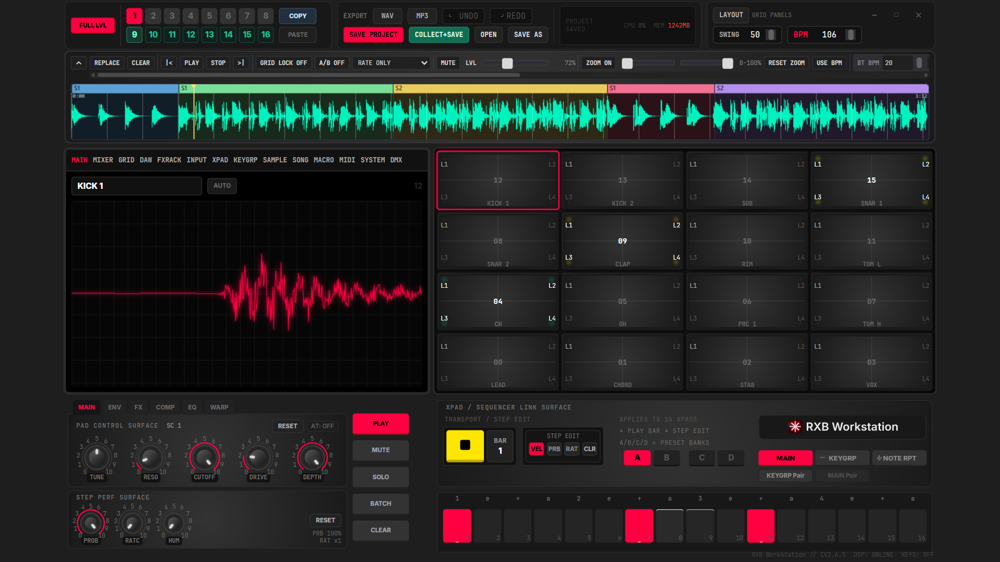
2. System Requirements#
RXB supports packaged desktop builds for Windows, macOS, and Linux. Behavior can vary by OS media codec availability and hardware audio stack.
| COMPONENT | GUIDANCE |
|---|---|
| Operating system | Windows (NSIS installer), macOS (DMG), Linux (AppImage) |
| RAM (minimum functional) | 4 GB |
| RAM (recommended baseline) | 8 GB |
| RAM (heavy sessions) | 16 GB |
| Audio hardware | Low-latency interface or stable onboard audio driver |
| Storage | Fast SSD recommended for larger sample projects |
Supported formats: WAV, AIFF, MP3, M4A, FLAC, OGG, WMA. Maximum file size: 256 MB. Maximum duration: 45 minutes.
- Open Settings → System → Display → Scale & layout
- Ensure Scale is set to 100% (Recommended)
- Restart the application after changing the scale
Higher scale values (125%, 150% etc.) reduce the logical pixel area available to the app, which can cause the workstation to appear smaller or fail to fill the screen. 100% is strongly recommended for the best experience.
See Figure 2.1 for the Windows display setting this requires.
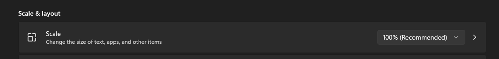
3. Getting Started#
Use this sequence for a clean first session.
- Click NEW CLEAN FILE.
- Set tempo and transport mode, then trigger pads to confirm audio output.
- Load samples into pad layers from SAMPLE or drag files onto pad quadrants.
- Build a pattern in GRID.
- Save using SAVE PROJECT.
- For a portable project, run COLLECT + SAVE before transfer or backup.
The OPEN action loads existing project files or folder-based project roots.
Figure 3.1 illustrates the home screen presented at launch.
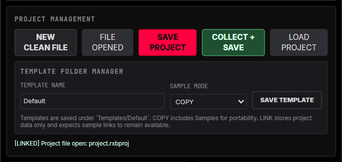
4. Core Concepts#
Scenes, Banks, and Source Pairing#
- Scenes are split into two linked ranges:
- Main scenes:
1-8(S1-S8, red context) - Keygroup-linked scenes:
9-16(K1-K8, teal/green context) - Banks are performance/sample banks A / B / C / D.
- Source toggles in song steps use MAIN and KEYGRP ON/OFF states.
If both scene systems are used in one arrangement, RXB adjusts playback routing to match step-level source settings.
Pad Layers and XY Quadrants#
Each pad has four independent layers labeled L1, L2, L3, L4.
| LAYER | XY QUADRANT | DROP POSITION |
|---|---|---|
L1 | Top-left | x < 0.5, y < 0.5 |
L2 | Top-right | x >= 0.5, y < 0.5 |
L3 | Bottom-left | x < 0.5, y >= 0.5 |
L4 | Bottom-right | x >= 0.5, y >= 0.5 |
Click a quadrant/layer target before load/edit actions when you need deterministic layer placement.
The quadrant split and its layer labels are shown in Figure 4.1.
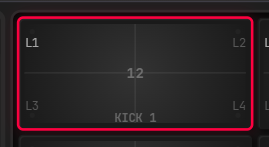
5. Pad Grid Operation#
The GRID view provides step sequencing, velocity editing, and per-step performance controls.
- Toggle steps directly on the grid.
- Use edit modes such as velocity/probability/ratchet for groove shaping.
- Use PLAY, MUTE, SOLO, and BATCH mode buttons to control pad behavior.
A populated step grid is shown in Figure 5.1.
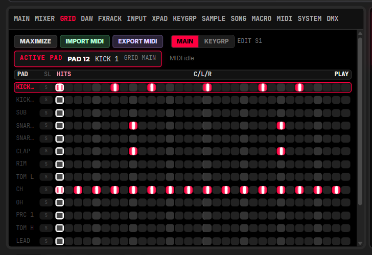
The BAR button (next to the Play button in the GRID) toggles the grid view between Bar 1 (steps 1–16) and Bar 2 (steps 17–32), allowing you to view and edit both halves of a 32-step pattern. The current bar number is displayed on the button.
BATCH mode — tap pads to build a multi-pad selection (pads highlight in blue). The knobs panel switches to the BATCH EDIT surface showing 10 parameter knobs (VOL, TUNE, REV, DEL, CUTOFF, DRIVE, PAN, ATK, DEC, REL). Moving any knob sets that parameter to the same value across all selected pads simultaneously. Press BATCH again or CLEAR inside the panel to exit.
See Figure 5.2 for BATCH mode with several pads selected.
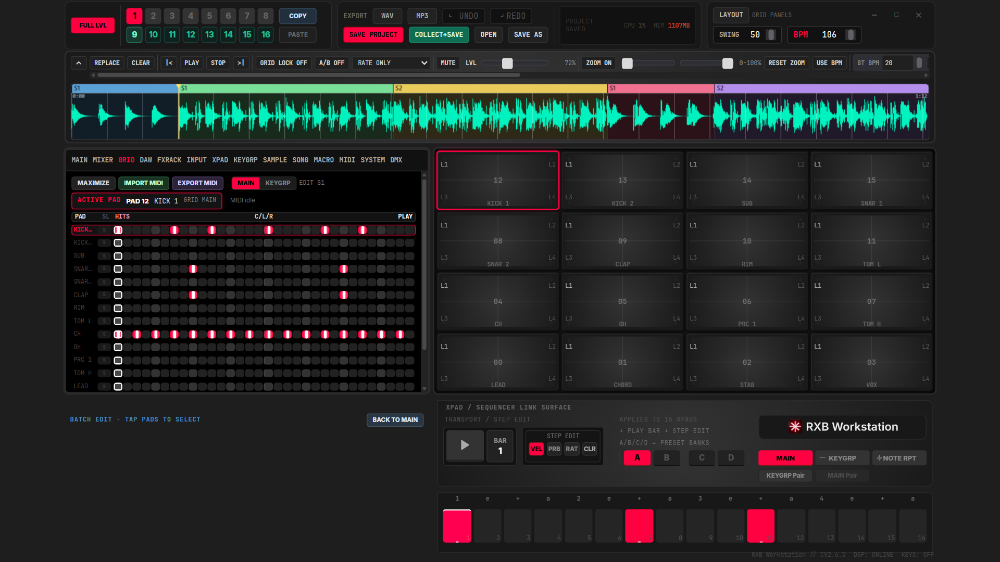
Choke Groups#
Two pads in the same choke group cannot sound at the same time. Whichever one you hit last silences the other.
This models a single physical instrument. The clearest example is a hi-hat: one pair of cymbals on one stand, so a closed hat and an open hat are the same object in two states. Striking the closed hat has to stop the open hat ringing, because physically the pedal has just clamped the cymbals together. Drum machines and samplers have called this a choke group, or a mute group, for decades.
Setting a choke group. Select a pad, open the MAIN tab of the PAD CONTROL SURFACE, and use the CHOKE dropdown in the panel header, next to AT:. Choose OFF (the default — the pad plays independently) or a group from 1 to 16. The control highlights when a group is set, so you can see at a glance which pads are wired together. There are 16 groups and 16 pads per bank, so a kit can never run out.
The setting belongs to the pad, not to the scene, and it is saved with the project.
Choke groups in the factory banks. Two banks ship with a group already assigned, both on the hats:
| BANK | PADS | GROUP |
|---|---|---|
| A | CH, OH | 1 |
| B | HAT CL, HAT OP, HAT PD | 1 |
Banks C and D ship with no choke groups. If you load your own sample onto one of the pads listed above, it inherits that pad's choke group — set CHOKE to OFF if you want the pad to play independently.
Useful beyond hi-hats. A choke group is just a rule that a set of pads is monophonic together, so it is worth reaching for whenever overlapping tails are the problem rather than the point:
- Two or three 808s in the same group, so a new bass note stops the previous one instead of stacking into mud.
- A row of vocal chops in one group, so only one vocal is ever heard.
- Risers and downlifters, so a new transition cancels the one still running.
Keyboard Pad Play#
If no MIDI controller is connected, the computer keyboard map is:
| ROW | KEYS |
|---|---|
| Row 1 | 1 2 3 4 |
| Row 2 | Q W E R |
| Row 3 | A S D F |
| Row 4 | Z X C V |
- Key down triggers the mapped pad.
- Key up releases the mapped key (important for keygroup and repeat behavior).
- Keyboard triggering is ignored while typing in text inputs.
6. Keygroup Mode (KEYGRP)#
When KEYGRP is active, pads become note keys derived from root note, scale type, and octave settings.
- In normal mode, each pad triggers its own sample identity.
- In KEYGRP, pad hits transpose the currently targeted sample voice.
- KEYGRP Pair and MAIN Pair control linked-bank audibility from the XPAD/sequencer link surface.
Figure 6.1 illustrates the keygroup scale controls.
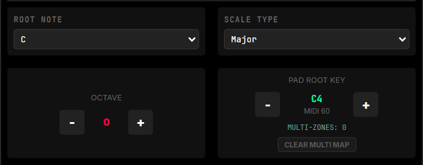
The KEYGRP ENGINE section in SYSTEM provides dedicated tone and dynamics control.
| CONTROL | FUNCTION |
|---|---|
| LOW / MID / HIGH | Three-band tonal shaping on the keygroup bus (-12 dB to +12 dB) |
| COMP | Keygroup bus compression amount (0.00 to 1.00) |
| GAIN | Keygroup bus output gain (0.50 to 2.20) |
| POLYPHONY | Maximum simultaneous keygroup voices (4-32) |
The engine controls for keygroup playback are shown in Figure 6.2.
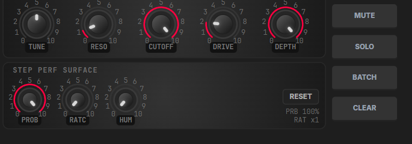
7. Effects & Routing#
Mixer View — Master Meter, Delivery Metering, and Channel Strips#
The MIXER view stacks five cards top to bottom: MASTER, DELIVERY METERING, MIX BUSES, SIDECHAIN, and the channel strip area. When the panel is shorter than its content, the whole view scrolls vertically — no controls are ever hidden; when the panel is taller, the channel strips grow to fill the extra height.
| ELEMENT | FUNCTION |
|---|---|
MASTER meter | Real-time master peak bar (green/amber/red zones) with a numeric PEAK readout in dBFS |
CLIP | Latches red when master clipping is detected; click to clear the latch |
LUFS-M / LUFS-S / LUFS-I | Momentary, short-term, and integrated loudness. LUFS-I reads green when inside the delivery window |
TRUE PK | True-peak estimate in dBTP; amber above -3, red above -1 |
TARGET -14 LUFS / -1 dBTP | The streaming delivery target the metering is judged against |
RESET | Restarts the integrated LUFS measurement |
GR | Master gain-reduction meter in dB |
| Spectrum display | Log-frequency analyzer of the master output (blue = low energy, red = hot) |
Each channel strip provides, top to bottom: a PAN knob (clip ring lights on channel clip), a level meter with peak line, the volume fader (drag vertically; the 0 dB unity line is marked), a dB scale with a live-level LIVE marker, the VOL readout in dB, the BUS selector (which mix bus this pad plays to — see Sending a Pad to a Bus below), and the PAD name button — click it to solo that channel, click the strip anywhere else to select the pad.
The full mixer surface is shown in Figure 7.1.
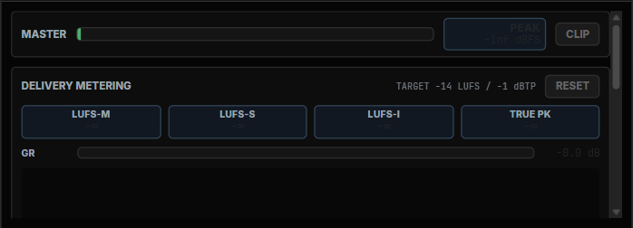
Mix Buses — Group Faders for Drums, Music, Vox, FX, and Backing#
Location: MIXER view → MIX BUSES card (between DELIVERY METERING and SIDECHAIN)
Everything you hear is grouped onto one of five buses on its way to the master chain. A bus is a group fader: it lets you move the balance between whole categories of sound — pull all the drums down together, push the vocal up — without touching the individual pad faders underneath.
| BUS | WHAT FEEDS IT |
|---|---|
DRUMS | Every pad you have not sent somewhere else (see Sending a Pad to a Bus below) |
MUSIC | The keygroup bus, plus any pad you assign here |
VOX | Live input monitoring |
FX | Reverb, delay, and FX-rack returns |
BACKING | The backing track and the DAW aux lanes |
Each strip carries the same five controls:
| CONTROL | FUNCTION |
|---|---|
| Level slider | Bus fader, with the current value shown in dB beside the bus name. Unity (0.0 dB) is the default |
| Meter | Post-fader output level for that bus — it follows the fader, pan, and mute, so it shows what the bus is actually sending to the master. Amber above −1.4 dBFS, red on clip |
PAN | Places the whole group in the stereo field. C is centre; values read as L50 / R50 |
M | Mutes the bus |
S | Solos the bus. Any solo silences the un-soloed buses; if a bus is both muted and soloed, mute wins |
MST / DIR | Routing. MST (default) sends the bus through the master 3-band EQ. DIR routes it around that EQ |
DIR exists mainly for the BACKING bus: a finished backing track has usually been mastered already, and pushing it through your master EQ colours it a second time. DIR keeps it out of that EQ — but it never bypasses the master compressor or the safety limiter, so it can still never clip the output.
Bus settings are saved with your project. A project saved before this feature existed simply opens with every bus at unity, centred, unmuted, and set to MST — which is exactly how it sounded before, so nothing you have already made will play back differently.
See Figure 7.2 for the five bus strips with SOLO active.
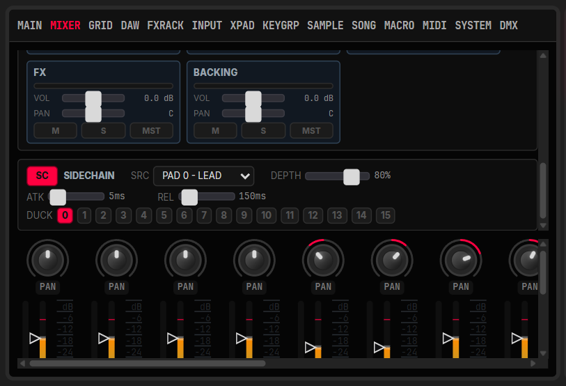
Sending a Pad to a Bus#
Location: MIXER view → pad channel strip → BUS selector (under the VOL readout)
By default every pad goes to the DRUMS bus. That is fine for a kit, but it is not what you want once a pad is carrying a bassline, a vocal chop, or a texture — those want their own group fader. The BUS selector on each pad strip sends that pad wherever you like:
| SETTING | WHERE THE PAD GOES |
|---|---|
AUTO | The default. Normal playback goes to DRUMS; KEYGRP playback goes through the keygroup bus into MUSIC |
DRM | The DRUMS bus |
MUS | The MUSIC bus — useful for melodic pads you want grouped with your keygroup parts |
VOX | The VOX bus — for vocal chops and one-shots, so they ride with your live input |
FX | The FX bus |
BCK | The BACKING bus |
An assigned pad shows its bus highlighted, so you can read the whole routing of a kit down the rail at a glance.
The change takes effect immediately, even on a pad that is still ringing — you can reassign while the sequencer is running and hear it move. Assignments are saved with your project, are the same in every scene, and a project made before this feature existed opens with every pad on AUTO, which is exactly how it sounded before.
Figure 7.3 illustrates pads assigned to different buses.
Sidechain Compression#
Location: MIXER view → SIDECHAIN panel (between DELIVERY METERING and the channel strip area)
| CONTROL | FUNCTION |
|---|---|
SC | Toggle — activates the sidechain ducking engine |
SRC | Select the trigger pad by PAD ID (shown as PAD {id} - {label} in the dropdown) |
DEPTH | How much the target pads duck (0–100%) |
ATK | How fast ducking engages (1–500 ms) |
REL | How fast ducking recovers (10–2000 ms) |
DUCK | The target pad buttons — toggle which pads are ducked by the source. Buttons display PAD ID for stable routing even if pad labels are duplicated or renamed |
Sidechain config is saved per project. The envelope follower runs in the audio rAF loop at display rate, driving a dedicated sidechainDuckGain node on each target pad's output chain — no audio dropout on rapid toggles.
The sidechain controls are shown in Figure 7.4.
FX Send Rack#
The FXRACK view hosts five built-in send modules.
| FX TYPE | DESCRIPTION |
|---|---|
GRN (Granular Bloom) | Granular texture/diffusion for bloom and glitch movement |
VRB (Nebula Verb) | Hybrid reverb textures (room/hall/plate-like spaces) |
ECH (Vector Echo) | Stereo delay with routing and modulation variants |
AIR (Bedroom Air) | Vocal doubler/air enhancement chain |
PSY (Psychedelic Vox) | Slap/echo/swirl style vocal space chain |
The SYSTEM view also provides SAMPLE DECODE ROUTING:
- JS-FIRST (default) for compressed-format latency balance.
- NATIVE-FIRST for native decode preference on compressed formats.
WAV/AIFF-family decode remains native-preferred where available.
See Figure 7.5 for the module browser and the PAD SENDS card.

8. File Management#
Project Contract and Folder Conventions#
Use these exact names for stable project portability.
- Primary file:
project.rxbproj - Legacy mirror:
project.json - Backups:
project_backup_TIMESTAMP.rxbbak - Sample folder:
Samples/ - Export folders:
Bounces/,MIDI/
Folder-open discovery order:
project.rxbprojproject.json- First matching
.rxbprojor.jsonin project root
Save and Open Actions#
- SAVE PROJECT writes both
project.rxbprojandproject.json, then creates a timestamped backup. - COLLECT + SAVE copies required sample assets to
Samples/and writes project files. - SAVE AS creates a new project destination while preserving project metadata links.
- OPEN supports folder-first and direct-file project open flows.
- NEW CLEAN FILE initializes a fresh project state.
Backups are auto-cleaned to retain the newest three backup files per project root.
9. Troubleshooting#
Use this section for common recovery and stability checks.
Missing Samples or Broken Links#
- If a file shows as missing, relink from the relevant load action first.
- Re-run COLLECT + SAVE to rebuild portable sample references in
Samples/. - Reopen the project and confirm all pad layers (
L1-L4) resolve.
Backing Track Import Failures#
- Confirm extension is one of:
WAV,AIFF,MP3,M4A,FLAC,OGG,WMA. - Confirm file size is below
256 MBand duration is below45 minutes. - Use desktop runtime for best
WMAcompatibility.
Keygroup Mix Clarity#
- Confirm target track state is not muted/solo-filtered unexpectedly.
- Raise
MIDandHIGHslightly in KEYGRP ENGINE. - Add moderate
COMP, then trimGAINto avoid clipping. - Increase
POLYPHONYif notes are cut early.
Native Transport Fallback#
The desktop runtime drives playback timing from the C++ native transport backend. If the native transport drops mid-session, playback continues seamlessly on the JS clock and the status line shows:
Native transport dropped - playback continued on the JS clock. Stop/play to retry native.No action is required — timing continues uninterrupted. Stop and restart the transport once to retry the native backend.
Audio Device Not Released After Close (Windows)#
On Windows, if the microphone or system audio recording indicator (taskbar) stays active after RXB is closed, the audio capture device was not fully released.
Close the app and check Task Manager for any lingering RXB or Electron processes. Terminate them to release the device.
If the device indicator persists even after full process exit, confirm your audio driver and virtual device software (e.g. VB-Audio Cable, Stereo Mix) are up to date.
10. Appendix#
Glossary#
| TERM | MEANING |
|---|---|
| Scene | Pattern/state snapshot in the sequencer context |
| Bank | A/B/C/D pad/sample bank set |
| Keygroup | Note-mapped playback mode linked to KEYGRP controls |
| Choke group | Set of pads that cannot sound together; the newest hit silences the others, as a closed hi-hat stops an open one |
| Collect Save | Portable save process that gathers sample dependencies |
| Native transport | C++ transport backend used by desktop runtime |
Technical Specifications (Current)#
- Backing-track load limit:
256 MB - Backing-track duration limit:
45 minutes - Maximum inline embedded backing payload in project metadata:
96 MB - Project backups: newest 3 retained per project root
- Keyboard pad map:
1 2 3 4 / Q W E R / A S D F / Z X C V
Home Screen and PAD CONTROL SURFACE#
Open Project Button#
The home/intro screen shows an Open Project button alongside recent project entries. Clicking it opens a folder picker to browse to any project root directly, without requiring a recent entry. Project load errors appear as an inline dismissable message on the home screen.
PAD CONTROL SURFACE#
The PAD CONTROL SURFACE panel (knobs area, MAIN/ENV/FX tabs) uses a consistent visual layout across all tabs:
- All three tabs use medium-size knobs (
size 10— 38 px body, 56 px ring). - Knobs are horizontally and vertically centred within the panel background after the heading on all tabs.
- MAIN tab: 5 knobs in one row — TUNE, RESO, CUTOFF, DRIVE, DEPTH (AT aftertouch depth). The panel header carries RESET, the AT target toggle (
AT: OFF/AT: VOL), and the CHOKE group selector (OFF, or1–16— see Section 5, Choke Groups). - ENV tab: 4 knobs — ATK, DEC, SUS, REL.
- FX tab: 3 knobs (REV, DEL, PAN) + TYPE button sized to match knob footprint.
Addendum — August 7, 2026#
Changes in this revision (Sections 9 and 14 updated in place):
- Backing-track MUTE button — new MUTE toggle beside the LVL slider in the backing-track strip. Gain-only mute with a click-free ramp: the playhead, grid lock, and song-section mapping keep running, the LVL setting is preserved (readout struck through while muted), and the sample-editor preview remains audible. See Section 14.
- Song ↔ backing-track timeline sync (sequencer is master) — the coloured song-section bands on the backing waveform, the playhead alignment, BARS/per-step-BPM edit follow, and waveform seek all now share one timeline mapping, so they always agree. Clicking or scrubbing the waveform with GRID LOCK on moves both the backing playhead and the Song Mode pointer; the cued song position survives STOP so PLAY resumes from the cued section. See Section 14.
- Native transport fallback notice — if the native C++ transport drops mid-session, playback continues on the JS clock and a status message explains how to retry. See Section 9 (Troubleshooting).
- Correction — Section 14 LOCK MODE now documents the actual selector options (RATE ONLY, RATE+PHASE, FOLLOW TRACK BPM); earlier revisions described a Rate/Stretch pair that is not present in the app.
Addendum — August 12, 2026#
Changes in this revision (Sections 11, 14 and 15 updated in place):
- DAW clip editing —
CLIP/MOVEarming on every lane — the master lane and each aux lane now arm one drag gesture at a time.CLIPdrags the edge handles to set the track's in/out points;MOVEdrags the body to place the track in the song. Only the armed gesture is drawn, so the two can no longer be confused or mis-hit. See Section 15. - The backing track can start later than the song — the master lane's
MOVEgesture places the track on the arrangement using the same grid offset asSET GRID STARTand the±msnudges. A backing track that comes in two bars late no longer shortens or crops the song around it. See Section 15. - Zoom and trim are documented as separate controls — the
ZOOMsliders andRESET ZOOMare view-only; theCLIPhandles are what set in/out points and silence audio. Earlier revisions left this ambiguous because the two shared one control internally. See Section 14. - Undo scope and the boundary notice — Section 11 now states what the edit history covers (sequencer scenes and pad state) and what it does not (backing track, DAW lanes, song structure, mixer, FX, DMX).
Ctrl+Zafter an uncovered action now reports that it was skipped instead of reaching past it into your sequencer work. See Section 11. - Correction — the header memory readout was showing roughly one-thousandth of actual usage (a
1 MBreading for a session using close to a gigabyte). It now reports correctly; expect realistic figures in the hundreds of MB.
Superseded on August 15, 2026. Both clears are now undoable — see the August 15 addendum below and Section 11.
Addendum — August 15, 2026#
Changes in this revision (Sections 7 and 11 updated in place):
- MIX BUSES — group faders in the MIXER view — everything now sums through one of five buses (
DRUMS,MUSIC,VOX,FX,BACKING) on its way to the master chain, each with a level fader, post-fader meter, pan, mute, solo, and a routing button.MSTsends the bus through the master 3-band EQ;DIRroutes it around that EQ without ever bypassing the safety limiter. Bus settings save with the project. See Section 7. - Existing projects are unaffected — a project saved before mix buses existed opens with every bus at unity, centred, unmuted, and
MST, which is identical to how it sounded before. Nothing you have already made will play back differently. - Undo now covers clearing the backing track and clearing a DAW lane — this corrects the August 12 addendum above, which stated both were unrecoverable.
Ctrl+Znow restores the cleared audio. See Section 11. - SONG SECTIONS says when song mode is off — the panel now carries a status chip reading
SONG MODE OFF — EDITS SAVED, NOT PLAYEDorDRIVING PLAYBACK. Section edits and per-step BPM entry always commit; with song mode off they are simply not driving playback, which previously looked like the fields were broken.
Addendum — August 16, 2026#
Changes in this revision (Sections 7 and 27 updated in place):
- Send any pad to any bus — each pad channel strip in the
MIXERview has aBUSselector under itsVOLreadout:AUTO,DRM,MUS,VOX,FX,BCK. Until now every pad landed onDRUMS, so the bus faders could only balance all your pads as one block against the backing track. Put the bass onMUS, vocal chops onVOX, and theDRUMSfader finally means the drums. Assignments apply instantly — even to a pad that is still ringing — and save with the project. See Section 7. AUTOmeans what it always did — a pad set toAUTOplays toDRUMS, or through the keygroup bus intoMUSICwhen played inKEYGRPmode. Projects made before this feature open with every pad onAUTO, so nothing you have already made sounds different.KEYGRPplayback ignores the assignment — all keygroup pads share one keygroup bus, which is what gives them their own EQ and compression beforeMUSIC. WhileKEYGRPmode is on, the selected pad's strip shows a lockedKEYchip instead of the selector. See Section 7.- Export the whole arrangement in one press —
SONGview now hasEXPORT ARRANGEMENT(WAV/MP3). It rewinds to the top, plays the entire song, stops itself at the end and saves the file toBounces/. See Section 27. - Sidechain source selection no longer changes a pad's routing — picking a pad as the sidechain
SOURCEused to move that pad's audio toDRUMSbehind your back. It now leaves routing alone.
Addendum — August 22, 2026#
Changes in this revision (Section 16 updated in place):
- The factory sound library ships. Banks B, C and D previously contained 63 placeholder files that were half a second of silence each — the pads triggered, the meters moved, and nothing came out. All 63 are now real sounds. Bank A was always synthesised and is unchanged. See Section 16.
- Everything is synthesised by RXB. The samples were rendered offline by the application's own audio engine, not sourced from a sample pack. There is no third-party audio anywhere in the factory content.
- Cleared for commercial release. You may use the factory sounds in commercial music with no clearance, royalty or credit. The full terms, including the one restriction — you may not repackage the sounds themselves as a sample library — are in
EULA.txt, installed with the application. - All 42 manual screenshots re-captured against CV2.6.5. The previous set dated from 17 April 2026 and predated the DAW tab, the MIX BUSES card and per-pad bus routing. Capture is now automated (
npm run docs:screenshots) so the images track the app. - Bank C is tuned to A minor and the Bank D loops are tempo-labelled, so the melodic content works together without retuning.
Addendum — August 22, 2026 (documentation cleanup)#
Two sets of corrections, both found by comparing this manual against the shipped code rather than by reading it.
The Linear Arranger has been removed from this manual. ARR PLAY, ARR TO SONG and the +ARR clip-slot button were real features in CV2.6.3, but the UI was removed in CV2.6.4 and this manual kept documenting them for four minor versions. There was no way to reach any of the three in the shipped app.
Their job is now done by Song Mode (Section 27), which is both the successor and the better model: a song step carries a scene, a bar count with half-bar granularity, and optional BANK and BPM overrides, where an arranger segment only ever held a clip reference and a repeat count. If you remember building arrangements by chaining clips with +ARR, build them as song steps instead — capture your scenes, then add a row per section.
Sidechain control names corrected. Four of the five labels in Section 7's sidechain table never matched the UI. The panel reads SC, SRC, DEPTH, ATK, REL and DUCK — not SC ENABLE, SOURCE, ATTACK and RELEASE. The DUCK target-pad selector was not named at all.
Addendum — September 3, 2026#
Four audio-engine changes, all in Steam BuildID 25096633.
Choke groups are now a control, and they are documented. Choke groups had existed since the first release but there was no way to see or change one, and the only mention in this manual was a single clause in the Bank B kit description. Bank A's CH/OH pair was not documented at all. There is now a CHOKE selector on the MAIN tab offering OFF and groups 1–16, and a full explanation in Section 5.
Choke groups now cut at the right moment. The sequencer queues hits up to 100 ms before they are heard, and a choke was being applied when the hit was queued rather than when it sounded. Two consequences, both fixed:
- A ringing pad lost 75–100 ms of its tail, so an open hat followed by a closed hat left a hole in the groove instead of one hat cutting the other.
- Worse, two pads of the same group on the same step — a closed and an open hat together — could silence one of them entirely, producing no sound at all rather than a short one.
Song-mode tempo changes land on the beat. A per-step BPM override reached the transport clock a step late, so a section boundary played one step at the previous tempo. Dropping from 120 to 30 that is a step four times too fast, right where the change should be heard. Tempo now changes on the section boundary.
The output ceiling holds. The always-on safety limiter was not limiting. Measured on the shipped signal path, four pads at factory levels drove the output to +7.8 dBFS — past full scale, into clipping. The limiter now holds below -1 dBFS across the full range.
11. Extended Workflow Reference#
Backing Track Import (Detailed Behavior)#
- Loader filter accepts
audio/*,.wav,.aif,.aiff,.mp3,.m4a,.flac,.ogg,.wma. - Decode support still depends on runtime codec availability; desktop builds can use native fallback for additional formats when WebAudio decode fails.
- Backing toolbar actions include
LOAD TRACK/REPLACEandCLEAR TRACK. - For stable timing in production edits, prefer
WAV/AIFFand shorter source tracks when possible.
Performance MIDI Controller Library#
RXB includes profile-based performance control in MIDI -> PERFORMANCE MIDI CONTROLLER.
Built-in profiles:
- Novation Launchkey MK4 Family
- Novation Launchkey MK3 Family
- Novation Launchpad MK3 Family
- Ableton Push 3 (User Port)
- Ableton Push 2 (User Port)
- Ableton Push 1 (User Port)
- Ableton Push Family (Legacy Auto-Detect)
- Ableton Move
- Akai MPK Mini MK3
- Akai APC Key Family
- Arturia MiniLab Family
- Korg nanoKONTROL2
- M-Audio Oxygen Family
- Native Instruments Komplete Kontrol
- Generic MIDI (16 Pads + 4 Knobs)
Default profile behavior:
- 16-pad note mapping for pad triggering
- Macro control mapped to Macro
1-4 - Transport parsing for Play/Stop/Record-capable controllers
Default profile values (per family):
| PROFILE | PAD BASE NOTE | MACRO CC DEFAULTS |
|---|---|---|
| Novation Launchkey MK3 / MK4 | 36 (C1) | 21, 22, 23, 24 |
| Novation Launchpad MK3 | 36 (C1) | 21, 22, 23, 24 |
| Ableton Push 1 / Push 2 / Push 3 | 36 (C1) | 14, 15, 16, 17 |
| Ableton Push Family (Legacy) | 36 (C1) | 14, 15, 16, 17 |
| Ableton Move | 36 (C1) | 71, 72, 73, 74 |
| Akai MPK Mini MK3 | 36 (C1) | 70, 71, 72, 73 |
| Akai APC Key Family | 36 (C1) | 48, 49, 50, 51 |
| Arturia MiniLab Family | 36 (C1) | 74, 71, 76, 77 |
| Korg nanoKONTROL2 | — (no pads) | 0, 1, 2, 3 |
| M-Audio Oxygen Family | 36 (C1) | 20, 21, 22, 23 |
| Native Instruments Komplete Kontrol | 36 (C1) | 14, 15, 16, 17 |
| Generic MIDI (16 Pads + 4 Knobs) | 36 (C1) | 21, 22, 23, 24 |
All profiles with pad support use MIDI Start/Stop/Continue transport, plus MMC/MCU/HUI parser support when host mode exposes it.
MIDI Learn (User Layer) target groups:
- COMBO —
combo_modifier - TRANSPORT —
transport_toggle,transport_stop,transport_record - MACROS —
macro_0,macro_1,macro_2,macro_3 - PUSH KNOBS —
knob_tempo,knob_swing,knob_filter,knob_resonance - PAD MAIN KNOBS —
knob_pad_tune,knob_pad_reso,knob_pad_cutoff,knob_pad_drive - PAD ENV KNOBS —
knob_env_attack,knob_env_decay,knob_env_sustain,knob_env_release - PAD FX KNOBS —
knob_fx_reverb,knob_fx_delay,knob_fx_pan - STEP PERF KNOBS —
knob_step_prob,knob_step_rat,knob_step_hum - STEP EDIT MODE —
knob_step_edit_vel,knob_step_edit_rpb,knob_step_edit_rat
The controller surface is shown in Figure 11.1.
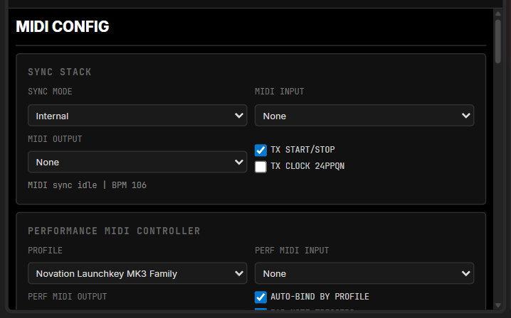
Poly Aftertouch and Channel Pressure#
RXB responds to incoming MIDI 0xA0 (Poly Aftertouch) and 0xD0 (Channel Pressure) messages.
- Poly Aftertouch (
0xA0): maps pressure for the triggered note to the matching pad by note index. - Channel Pressure (
0xD0): applies pressure to all pads that have an aftertouch target configured. - On note release, per-pad aftertouch pressure is cleared automatically.
Configuring aftertouch per pad (PAD CONTROL SURFACE → MAIN tab):
| CONTROL | FUNCTION |
|---|---|
AT: OFF / AT: VOL | Toggle the aftertouch target for the selected pad (OFF or VOLUME) |
DEPTH knob | Controls modulation depth (0–100%); at max, pressure adds up to +50% volume boost |
Settings are saved in pad presets and persist with the project.
Bluetooth MIDI#
Bluetooth MIDI controllers are supported natively via the WebMIDI API ({sysex: true} permission). RXB treats Bluetooth MIDI inputs identically to USB/DIN. Pair your controller at the OS level first, then select it in SYSTEM → PERFORMANCE MIDI CONTROLLER. No additional configuration is required. onstatechange hotplug detection handles connect/disconnect events.
Retrospective MIDI Capture#
Location: GRID MAXIMIZED → MIDI FILE EXCHANGE → Retrospective MIDI Capture
- Button:
CAPTURE LAST - Capture length control:
1-60 sec - Recovers recent unarmed pad/MIDI performance into the active scene timeline
Usage notes:
- Best used immediately after a spontaneous performance pass.
- Review quantization/step density after capture when recording very dense passages.
Undo / Redo#
Undo/Redo uses a bounded dual-stack snapshot model for edit history.
- Undo:
Ctrl+Z/Cmd+Z - Redo:
Ctrl+YorCtrl+Shift+Z/Cmd+Shift+Z - History depth: up to
40states
What undo covers. The history holds your sequencer scenes and pad state — step edits, pad parameters, sample edits, chops, MIDI import and captured input. It also covers clearing the backing track and clearing a DAW lane: both are undoable, and Ctrl+Z puts the audio back. It does not cover song structure, mixer, mix buses, FX, or DMX; those are project state outside the edit history.
Edits are grouped into gestures. A continuous run of step edits counts as one undo step, so Ctrl+Z after tapping in a hi-hat pattern removes the pattern rather than the last cell. Pause for about a second and the next edit starts a fresh undo step; a long unbroken run also breaks into separate steps every few seconds, so no single Ctrl+Z can swallow minutes of work. Velocity and pan scrubs group the same way, per step.
What happens at the boundary. If your last action was outside that scope — for example a song-structure or mixer change — Ctrl+Z does not reach past it into your sequencer work. Instead the header shows:
Nothing to undo — <action> is outside undo history; your last sequencer edit was left alone.Press Ctrl+Z again and it resumes normally, undoing your most recent sequencer edit.
KEYGRP Extended Notes#
PAD ROOT KEYis per-pad and defines the sample reference key used for pitch calculation.- In
GRID,MAINeditsS1-S8andKEYGRPedits linkedK1-K8(Scenes 9-16). - Pair controls are mode-sensitive — in
MAIN,KEYGRP Paircontrols linked-bank audibility; inKEYGRP,MAIN Paircontrols linked-bank audibility. - Pair controls reset to OFF when switching modes.
SONG Tab (Song Modes)#
SONG includes two transport-driven playback modes:
SONG MODE: playlist-driven step playback (scene + bars)
Playlist step fields:
SCENE(1-8)BARS— section length in bars. A pattern loop is 2 bars, so odd values end the section on half a loop½ BAR— on odd-length sections only, chooses whether the trailing bar plays the pattern's1STorLASTbarBPM(AUTOor override). An override takes effect on the first beat of the section — including large jumps such as 120 down to 30, which change tempo on the section boundary rather than a step into itBANK(AUTOorA/B/C/D)SOURCEtoggles (MAIN+KEYGRP)
Clip launcher notes:
CAPstores current scene into a clip slot.GOqueues clip launch with bar quantization.
Runtime behavior note:
- After changing the song structure, verify from a fresh Play start (stop/start once) so the latest transport plan is applied.
Non-Destructive Chop Workflow#
Location: SAMPLE view → SET MARKERS panel
The chop system uses non-destructive slice markers stored separately from the source audio. The source pad is never overwritten.
Setting markers:
| ACTION | RESULT |
|---|---|
| Click waveform | Places a yellow slice marker at that position |
+ AT PLAYHEAD button | Places a marker at the current playhead position |
AUTO button (threshold-based) | Generates markers from transient energy |
EQUAL button | Divides the sample into equal-length slices |
CLEAR | Removes all markers |
Committing chops:
- Press
COMMIT CHOPS(amber, enabled only when markers are present). - Chops are assigned to pads starting after the source pad in bank order.
- The source pad is preserved with its original sample intact.
- Markers are cleared after a successful commit.
Figure 11.2 illustrates slice markers placed across a sample.
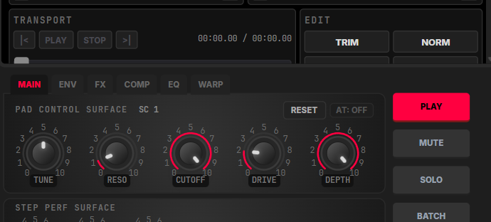
Multi-Sample Batch Editing#
Location: XPAD area → BATCH mode button (track mode strip)
Batch editing applies a parameter value to multiple pads simultaneously.
- Press BATCH — the button highlights blue, pad hit behavior switches to selection mode.
- Tap any pads to add them to the selection (blue border highlight). Tap again to deselect.
- The right panel switches to the BATCH EDIT surface with 10 knobs across two rows.
- Drag any knob to set that parameter to the same value on all selected pads.
- Press BATCH again (or CLEAR in the panel) to exit and deselect all.
Available batch parameters: VOL, TUNE, REV, DEL, CUTOFF, DRIVE, PAN, ATK, DEC, REL.
Input Routing Persistence#
Input routing selection (selected audio input device) is saved at two levels:
- App level: persisted to
localStorage— restored on every launch. - Project level: saved inside
project.rxbprojasinputRoutingSettings— restores the routing for that specific project when loaded.
Project-level routing takes precedence when a project is loaded. App-level routing applies at cold start before any project is opened.
SAMPLE View Marker Guides#
SHOW GRID: BPM-aligned marker lines (16th-note spacing).SHOW TRANSIENTS: transient markers based on waveform energy changes.SNAP TO MARKERS: seek/trim controls snap to nearest active marker within timing window.
For predictable loop edits, enable both SHOW GRID and SNAP TO MARKERS.
FX Rack Stability Notes#
Granular Bloomincludes safety/dynamics protection to reduce runaway feedback.- If a patch is dense, reduce per-pad send amounts before reducing master output.
- Then trim module
feedbackandmixvalues. - For
Bedroom Air, start with moderatemixanddoubler, then raiseair. - For
Psychedelic Vox, start with lowerfeedbackand raisefluttergradually.
UI Consistency and Chop Editing Notes#
1) System / MIDI Layout#
- MIDI sync/performance/midi-learn controls live in the dedicated
MIDItab. - The
SYSTEMtab contains hardware, engine, and routing controls.
2) FXRACK Pad Sends Tile#
PAD SENDSfollows a consistent panel structure:- Header row with title + active pad badge (
Pxx) - Divider line under header
- Knob row beneath the divider
- Top send knobs (
GRN/VRB/ECH/AIR/PSY) are aligned in a fixed 5-column grid for visual consistency with the lower FX knob row.
3) SAMPLE Header Layout#
- Layer buttons are arranged in XPad-style 2x2 placement:
- Top row:
LAYER 1,LAYER 2 - Bottom row:
LAYER 3,LAYER 4 - Header controls group as:
LOAD,COPY,PASTE- Layer name field
SAVE ASon the far right with helper note (Current layer WAV)
4) Draggable Chop Markers#
- In
SAMPLE, chop markers on the waveform can be dragged directly to reposition. - Existing click-on-waveform behavior to add markers remains active.
- Drag respects marker ordering and minimum spacing.
- When
SNAP TO MARKERSis enabled, moved chop markers snap using the same marker snapping system.
UI Layout and Input Capture Reference#
1) Collapsible Transport / Backing Track Strip#
The Transport panel (backing track section) has a Collapse / Expand toggle button at the left edge of the strip.
- Collapsed state (
▲ COLLAPSE): the transport strip shrinks to a single row. The freed rows are distributed to the LCD screen and XPads panels, which expand to fill the space. - Expanded state (
▼ EXPAND): the full backing-track waveform and controls are restored.
The collapse state is per-session and resets on relaunch.
2) Bottom-Pinned Panels#
The Pad Surface (knobs) and Sequencer panels are permanently anchored to the bottom of the workspace with 6 px padding. They do not move in Layout Mode — drag/resize chrome is suppressed on pinned panels. All panels above them are clamped to the available rows.
3) Selected Pad Indicator#
The currently selected pad displays a 2 px red (#ff0040) border. Switching to a different pad immediately updates the indicator. The selected pad state is also reflected in the SAMPLE and XPAD tab views, which auto-update to show the active pad's content.
4) Tab Bar — Active State#
All tab labels are white by default. The active tab is highlighted in corporate red (#ff0040). This applies to all tabs, shown left to right: MAIN, MIXER, GRID, DAW, FXRACK, INPUT, XPAD, KEYGRP, SAMPLE, SONG, MACRO, MIDI, SYSTEM, DMX.
5) Record Input to Pad — Located on XPAD and SAMPLE Tabs#
The RECORD INPUT TO PAD card is available on both the XPAD and SAMPLE tabs. Both instances are identical. The INPUT tab shows a redirect notice and retains the monitoring controls.
The card header shows a live monitoring status badge and a quick START MON / STOP MON button so you can activate input monitoring without switching to the INPUT tab first.
| LABEL | FUNCTION |
|---|---|
RECORD INPUT | Start live input recording |
STOP RECORD | End capture and commit to pad/layer |
CAPTURE LAST | Capture last N seconds from retrospective buffer |
RESAMPLE MIX | Capture master mix output to pad |
SHOW SETTINGS / HIDE SETTINGS | Toggle auto-sampler settings panel |
START AUTO-SAMPLE | Begin auto-sampler sequence |
STOP AUTO-SAMPLE | Abort auto-sampler |
Layer 1 / Layer 2 / Layer 3 / Layer 4 | Layer dropdown options |
Errors from the card (e.g. monitoring not active, buffer not filled) are displayed inline in red text within the card itself.
6) CAPTURE LAST — Automatic Layer Fallback#
If the target layer on the selected pad is already occupied, CAPTURE LAST automatically places the captured audio on the next available empty layer.
- Scans forward from the selected layer (
Layer 1 → 4), then wraps back fromLayer 1if needed. - If all four layers are occupied, captures to the originally selected layer (overwrite).
- A status notice confirms where the audio was placed: "Layer 1 occupied — placed on Layer 2."
- The layer selector in the card updates to reflect the actual destination layer.
7) XPAD Tab Visual Details#
- Crosshair overlay: a light grey X/Y axis line is overlaid on each pad button, indicating the XY quadrant split at 50% opacity. This is a visual guide only and does not affect playback.
- Pad centre number: displayed at
11 px,#707070for legibility at a glance. - Layer buttons: radial gradient background matching the XPAD pad surface style.
- Card padding: all cards in the XPAD tab use condensed padding for denser information display.
12. Layout Mode#
Entering and Exiting Layout Mode#
Layout Mode lets you drag, resize, and reposition panels to customise the workspace.
| ACTION | METHOD |
|---|---|
| Enter Layout Mode | Press L on keyboard, or use the LAYOUT button in the toolbar |
| Lock and save layout | Press Enter, or click LOCK |
| Cancel without saving | Press Escape, or click CANCEL |
When Layout Mode is active, a red drag handle appears at the top of each panel, a dashed red border frames the panel, and a background grid becomes visible showing the available cell positions.
Layout Mode is shown in Figure 12.1.
Dragging and Resizing Panels#
- Drag: grab a panel by its red handle bar and drop onto any grid cell.
- Resize: drag the resize handles on any panel edge (top, bottom, left, right). Panel dimensions snap to full grid cells.
- Drop preview: a ghost overlay shows the proposed new position. Red tint = valid placement; darker red = blocked.
- Swap: dropping onto an occupied cell will attempt an intelligent swap, shifting displaced panels to available space.
Layout Presets#
Named presets are available via the preset selector in the toolbar:
| PRESET | USE CASE |
|---|---|
| Default | Balanced production layout — pads, sample, sequencer, mixer visible simultaneously |
| Pads Left | Pad grid and XPAD on the left, larger LCD and effects space on the right |
| Studio / Mix | Maximised mixer and FX rack — reduced pad surface for mixing/mastering passes |
| My Layout | Your saved custom arrangement (appears once you have saved one) |
See Figure 12.2 for the preset list.
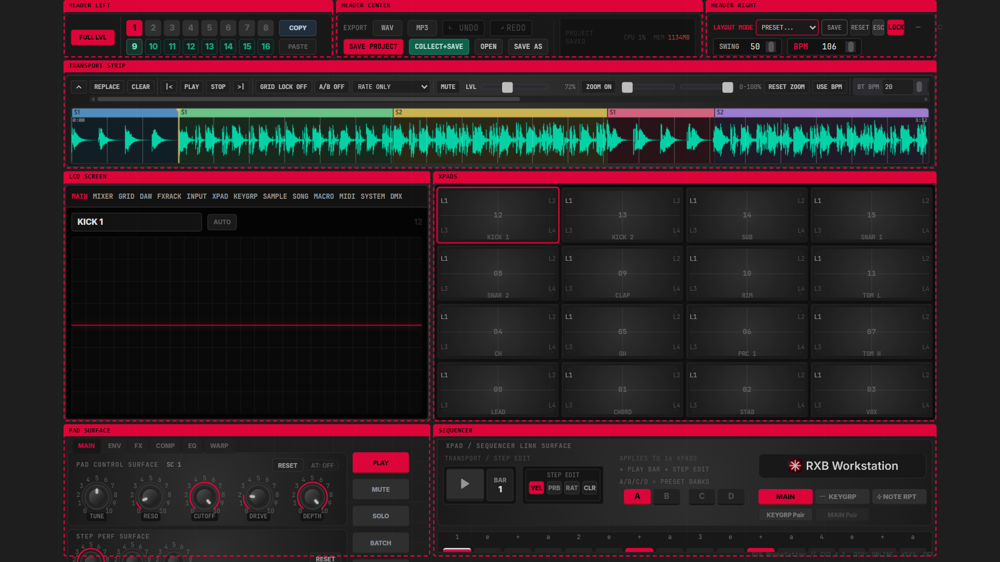
Saving a Custom Layout#
Click SAVE in the layout mode toolbar to save the current panel arrangement as My Layout. The SAVE action does not exit layout mode — you can continue adjusting and save again to update it. Once saved, My Layout appears as a selectable preset in the toolbar dropdown.
Confirming and Cancelling#
| BUTTON | ACTION |
|---|---|
| LOCK | Confirm the current arrangement, save it as the active layout, and exit layout mode |
| RESET | Reset the working arrangement to the Default preset (does not exit layout mode) |
| ESC / CANCEL | Cancel all changes and exit layout mode |
The active layout persists across sessions. My Layout is stored separately and can be recalled from the preset dropdown at any time.
Pinned Panels#
The Pad Surface (knobs) and Sequencer panels are permanently docked to the bottom of the workspace. They cannot be moved or resized in Layout Mode. All other panels are clamped to the rows above them. The pinned panels carry 6 px of bottom padding by default.
13. Transport and Tempo Controls#
BPM#
The BPM field is shown in the transport strip. Click the value and type a new tempo, or use the up/down arrows. The accepted range is 20–300 BPM.
Swing#
The Swing control adds rhythmic offset to alternating steps. The displayed range is 50–75:
- 50 — straight timing (no swing)
- >50 — the 1st, 3rd, 5th … (even-indexed) step of each pair is stretched longer and the 2nd, 4th, 6th … step is shortened, producing a swing feel
- 75 — near-maximum swing offset (approaching triplet feel, which lives near
~66.7)
Swing is applied per-step at render time and affects pad playback and the step sequencer. Backing tracks align to the sequencer grid, so swing indirectly shifts their perceived beat positions without altering the backing-track audio itself.
Metronome#
The METRONOME toggle lives in the SYSTEM tab. When active, a click fires on every beat (every 4 steps), with an accented click (1 kHz vs 800 Hz) on the bar downbeat. The click is routed directly to the audio output, bypassing the master bus and FX chain so master EQ, compression, and effects do not colour it.
The transport controls are shown in Figure 13.1.
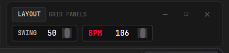
14. Backing Track — Full Control Reference#
Collapse / Expand#
The transport strip has a ▲ COLLAPSE / ▼ EXPAND toggle at its left edge. Collapsing hides the waveform display and reduces the strip to a single row, redistributing the freed space to the LCD and XPAD panels. Collapsing the transport strip stops backing-track playback before the panel shrinks. The toggle is pinned at the fixed left edge and remains visible even when the horizontal content is scrolled right.
Figure 14.1 illustrates the expanded backing-track strip.
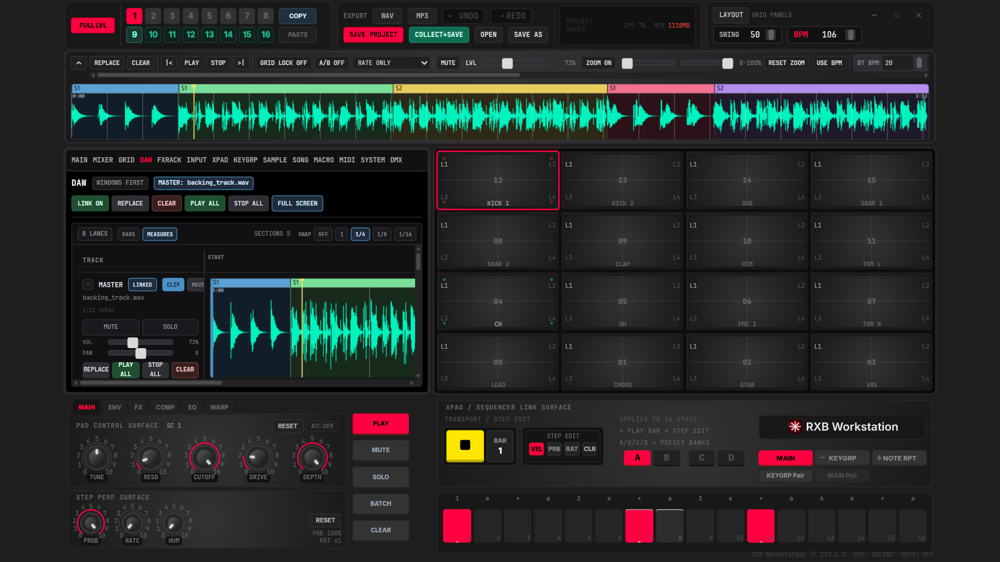
Waveform Zoom#
The ZOOM ON / ZOOM OFF button toggles waveform zoom. When on, the backing-track waveform is expanded horizontally for finer positioning. This does not affect playback — zoom is view only.
Zoom is not trim. The ZOOM sliders and RESET ZOOM change only what you are looking at. Setting the track's in and out points is a separate action — the CLIP handles on the DAW master lane (Section 15) — and that is what actually silences audio. Zooming in on a passage never shortens the track, and trimming the track never crops your view of the song.
Grid Lock and Phase Offset#
| CONTROL | FUNCTION |
|---|---|
| LOCK MODE | Selects how the backing track locks to the grid: RATE ONLY, RATE+PHASE, or FOLLOW TRACK BPM (see below) |
| GRID START / SET GRID START | Sets the phase origin — the point in the backing track that aligns to beat 1. Use this to align a loop that does not start on beat 1 |
| BPM (manual field) | Override the estimated BPM. Enter exact tempo to lock the track to the sequencer grid |
Lock modes in detail:
- RATE ONLY (default) — the backing track's playback rate is scaled so its BPM matches the project BPM (or the manual BT BPM override). Pitch shifts with the rate, like classic repitch playback.
- RATE+PHASE — same rate matching, and when the transport starts, the sequencer's start step is derived from the current backing-track position, so the pattern phase lines up with wherever the track is.
- FOLLOW TRACK BPM — the track plays at its native speed (rate
1.0×) and the project BPM follows the track's confirmed or estimated BPM instead.
Backing Track Mute (MUTE / LVL)#
A MUTE button sits next to the LVL slider in the backing-track strip (disabled when no track is loaded; lit red while muted).
- Mute is gain-only with a short click-free ramp — the track keeps playing silently, so the playhead, grid lock, and song-section mapping all stay exactly where they are.
- Your LVL setting is untouched: the slider dims and the percentage readout is struck through while muted, and unmuting restores the same level.
- The sample-editor preview stays audible while the backing track is muted — MUTE silences only the backing track itself.
Waveform Seek — Song Follows (Sequencer is Master)#
Clicking or scrubbing the backing-track waveform seeks the track. When GRID LOCK is on, the seek moves both: the Song Mode pointer (current section and bar) snaps to the song section under the new playhead position, and during Song Mode playback the matching scene is applied immediately. Seeks resolve to the nearest bar, the finest boundary a section can start or end on.
- The cued song position survives STOP — pressing PLAY resumes from the cued section rather than restarting from the top.
- Editing a section's BARS count or per-step BPM re-pins the playhead to the same musical position inside the same section, so the coloured section bands, the playhead, and every seek always agree.
- With GRID LOCK off, the backing track is independent and a waveform click behaves as a plain seek.
Playback Rate#
The rate control (0.5× to 2.0×) changes playback speed without affecting the sequencer. Values below 1.0× slow the track; above 1.0× speed it up. Use Rate lock mode to pitch-compensate.
Keyboard Shortcut#
| SHORTCUT | ACTION |
|---|---|
Shift + X | Clear the loaded backing track |
Backing Track Collapse Behavior#
Collapsing the transport strip stops backing-track playback before the panel shrinks. This prevents the backing track from continuing in the background after the waveform strip is hidden.
15. DAW View — Multi-Lane Backing Track Workspace#
The DAW tab is a Windows-first, horizontal multi-lane workspace for arranging and auditioning backing tracks and stems against your pattern. It hosts one MASTER lane (the project backing track shared with the transport strip) plus seven AUX lanes for additional reference tracks or stems, each with its own waveform, transport, and mix controls.
The DAW view is developed and validated on the Windows/Electron desktop runtime first. Other platforms inherit the same logic once proven.
The DAW workspace is shown in Figure 15.1.
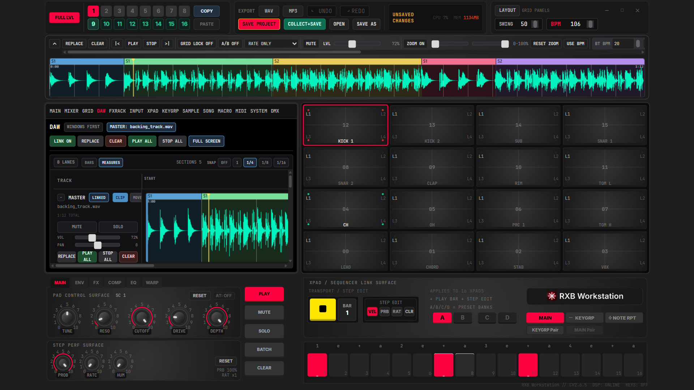
DAW Header Controls#
The top strip of the DAW view holds the global controls:
| CONTROL | FUNCTION |
|---|---|
DAW / WINDOWS FIRST | Title and platform badge (informational) |
MASTER: {name} | Shows the loaded master backing-track name, or NO BACKING TRACK |
LINK ON / LINK OFF | Links all loaded lanes to one shared transport. ON by default. When ON, the master and every loaded aux lane start, pause, and stop together from a single Web Audio scheduled timestamp so they stay sample-aligned |
LOAD TRACK / REPLACE | Loads (or replaces) the master backing track |
CLEAR | Clears the master backing track |
PLAY ALL / PAUSE ALL (linked) — PLAY / PAUSE (unlinked) | Starts or pauses playback. The label and scope follow the LINK state |
STOP ALL (linked) — STOP (unlinked) | Stops playback and returns to the start |
FULL SCREEN | Opens the DAW in a maximised overlay (see below) |
Linked vs. Unlinked Playback#
- LINK ON (default):
PLAY ALLstarts the master backing track and every loaded aux lane from one shared scheduled start time.PAUSE ALLandSTOP ALLapply to all lanes at once. This is the mode for layered stems that must stay locked together. - LINK OFF: The header transport controls only the master track. Each aux lane is driven independently from its own per-lane
PLAY/STOPcontrols, so you can audition individual backing tracks without starting the rest.
Per-lane PLAY / STOP controls remain available on each aux lane regardless of link state, so you can always audition a single track.
Timeline Header and Markers#
Below the controls is the HORIZONTAL TIMELINE header:
| ELEMENT | MEANING |
|---|---|
{n} LANES | Total lane count (master + aux) |
LVL {n}% | Current master backing-track level |
BPM {value} | Master backing-track BPM label |
GRID {LOCK / FREE} | Master grid-lock state |
SECTIONS {n} | Number of song sections overlaid on the master waveform |
BARS / MEASURES | Timeline marker display mode toggle. MEASURES is the default. Switches the waveform ruler/markers between bar lines and measure lines |
The ruler across the top of the lanes shows START and percentage ticks (12.5% … 87.5%) as quick position references.
The MASTER Lane#
The MASTER lane is the larger top row and represents the project backing track (the same track shown in the transport strip). It carries:
| CONTROL | FUNCTION |
|---|---|
LINKED badge | Indicates the lane participates in linked transport |
MUTE / SOLO | Mute or solo the master in the lane mix |
VOL | Master level, 0–200% |
PAN | Stereo pan, -100 (left) … +100 (right) |
LOAD / REPLACE, PLAY / PLAY ALL, STOP / STOP ALL, CLEAR | Lane-level duplicates of the header transport actions |
CLIP / MOVE | Arms which drag gesture the master waveform responds to (see below) |
The master waveform honours the project's slice markers, song-section overlays, and the backing-track zoom view. Click anywhere on the master waveform to seek.
Master Clip Editing — CLIP and MOVE#
The master lane's waveform has two drag gestures, and exactly one is armed at a time. The armed gesture is the only coloured affordance on the clip, so there is nothing to aim at by mistake.
| MODE | WHAT DRAGS | WHAT IT CHANGES |
|---|---|---|
CLIP (default) | The two coloured edge handles | The track's in and out points — where the audio starts and stops playing. Non-destructive; the file is untouched |
MOVE | The body of the clip | Where the track sits in the song — which bar it comes in on. The in/out points do not change |
Both gestures snap to the DAW SNAP setting (default 1/4 bar; OFF, 1/8 and 1/16 are also available). While dragging, a readout shows IN and OUT in CLIP mode, or AT — the song position the track now starts at — in MOVE mode.
MOVE writes the same grid offset that SET GRID START and the ±ms nudges in the transport strip use, so all three controls agree. A positive offset places the audio later in the song; dragging left of the song start trims pre-roll off the front.
Trimming with CLIP silences audio outside the window and hides it on the waveform. It does not crop your view of the song: the section bands, ruler and playhead still draw across the full arrangement, and the ZOOM sliders are a separate view control (see Section 14).
AUX Lanes (1–7)#
Each of the seven aux lanes is an independent backing-track slot:
| CONTROL | FUNCTION |
|---|---|
LOADED / EMPTY badge | Whether a track is loaded in the lane |
MUTE / SOLO | Mute or solo this lane in the mix |
VOL | Lane level, 0–150% (default 65%) |
PAN | Stereo pan, -100 … +100 |
LOAD | Opens a file picker for the lane |
PLAY / PAUSE | Audition this lane independently |
STOP | Stop and reset this lane |
CLEAR | Remove the loaded track from the lane |
CLIP / MOVE | Arms which drag gesture this lane's clip responds to |
Aux lanes accept WAV, AIF/AIFF, MP3, M4A, FLAC, and OGG. Click an aux waveform to seek that lane to that position. The lane footer shows the total track time, or LOAD TRACK TO VIEW WAVEFORM when empty.
Each aux lane arms CLIP or MOVE independently, exactly as the master lane does: CLIP drags the edge handles to set the clip's in/out points inside the sample, MOVE drags the clip body to slide it along the lane timeline. Both snap to the DAW SNAP setting, and the drag readout shows IN · OUT · AT.
A moved aux clip is scheduled to start later rather than being pulled back to its head, so a clip placed at bar 9 stays silent until the playhead reaches it — in linked playback as well as solo audition.
See Figure 15.2 for a single aux lane in detail.
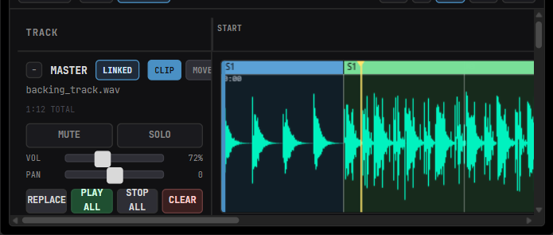
Solo and Mute Behavior#
- When any lane (master or aux) is soloed, all non-soloed lanes are silenced.
- An explicit MUTE always silences that lane regardless of solo state.
- Lane levels are applied smoothly to avoid clicks when toggling mute/solo during playback.
Full Screen#
Press FULL SCREEN to expand the DAW into a maximised overlay titled DAW FULL SCREEN // BACKING TRACKS for detailed multi-lane work. Press CLOSE (top-right) to return. Leaving the DAW tab also exits the maximised overlay.
16. Bank Switching (A / B / C / D)#
Each bank holds an independent set of 16 pads with their own samples, layer names, and parameter settings. Banks share the same scenes and patterns.
Switching Banks#
Click A, B, C, or D in the bank selector strip (visible in the XPAD area and transport). The active bank button highlights in red.
The bank selector is shown in Figure 16.1.
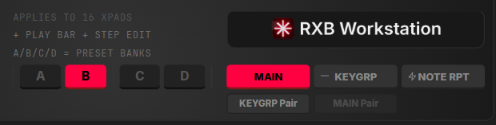
What Changes on a Bank Switch#
- All 16 pad sample assignments change to the bank's stored values.
- Pad parameters (tune, env, FX sends) change to the bank's stored values.
- Pattern/scene data does not change — patterns are bank-independent.
- The currently selected pad ID is preserved; the sample loaded there changes.
Bank Overrides in Song Mode#
Each song playlist step has an optional BANK field. Set it to A, B, C, or D to force a bank switch when that step plays, or leave it AUTO to keep the current bank.
The Factory Sound Library#
Every bank is filled in when you install. You do not need to load a sample pack before you can make something.
Bank A — Synth Kit. Bank A uses no samples at all. All 16 pads are played by RXB's built-in synthesis voices, so they are tunable from the pad controls with no audio file behind them. Pads: KICK 1, KICK 2, SUB, SNAR 1, SNAR 2, CLAP, RIM, TOM L, CH, OH, PRC 1, TOM H, LEAD, CHORD, STAB, VOX. CH and OH share choke group 1, so the closed and open hats behave as one hi-hat and cut each other — see Section 5, Choke Groups.
Bank B — Core Drum Kit. 20 acoustic-style drum samples: three kicks (one with a separate sub layer), two snares plus a rimshot, two claps, a rim, a low tom, closed/open/pedal hats, two shakers, two percussion hits, a crash and a ride. The three hats — HAT CL, HAT OP and HAT PD — share choke group 1 and cut each other, as one hi-hat would.
Bank C — Melodic and Vocal Kit. 24 pitched samples, all tuned to A minor so the bank plays together out of the box: three basses with alternates and a fill, seven synthetic vox chops and ad-libs, three stabs, three chords, three leads, two pads, an atmosphere bed and a two-bar signature loop at 90 BPM.
Bank D — 808s, FX and Transitions. 19 samples for arrangement moves: four 808s (including a long-tail version for half-time), drum FX, a cinematic impact, up and down sweeps, a snap, a riser, a downlifter and four drum loops at 124, 140, 88 and 100 BPM.
Where the Factory Sounds Come From#
Every factory sample was generated by RXB Workstation itself. The same synthesis engine that plays Bank A was used to render each one-shot and loop offline; the reverb tails use impulse responses generated by the application rather than recordings of real rooms.
That matters for two practical reasons:
- They are yours to release. The factory content contains no third-party samples, recordings or sample packs. You can use it in commercial releases with no clearance, no royalty, no credit and no sample-replacement worry. The licence is set out in
EULA.txt, installed alongside the application. - They are a starting point, not a ceiling. Because they came out of the synth engine, anything in Banks B, C or D can be rebuilt or reshaped from Bank A's voices, or replaced entirely with your own recordings through the
INPUTtab and Record Input to Pad (Sections 18 and 19).
Figure 16.2 illustrates Bank B populated.
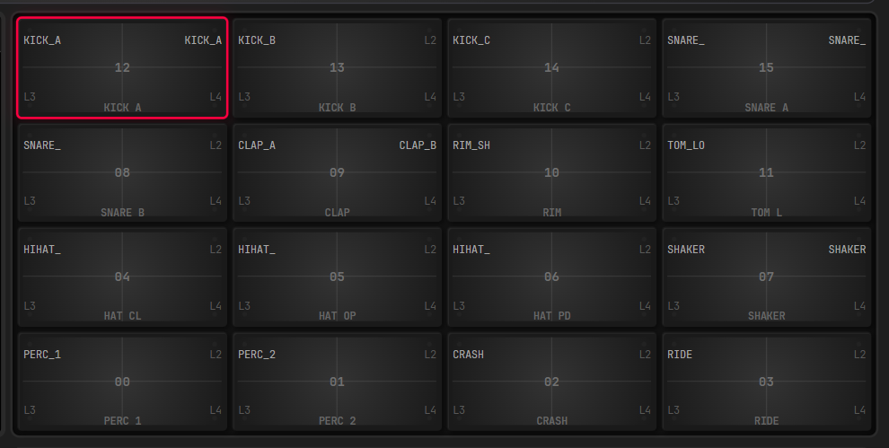
17. XPAD Tab Reference#
The XPAD tab is the primary pad editing surface. It combines layer management, pad configuration, and the full Record Input to Pad workflow.
The full XPAD tab is shown in Figure 17.1.
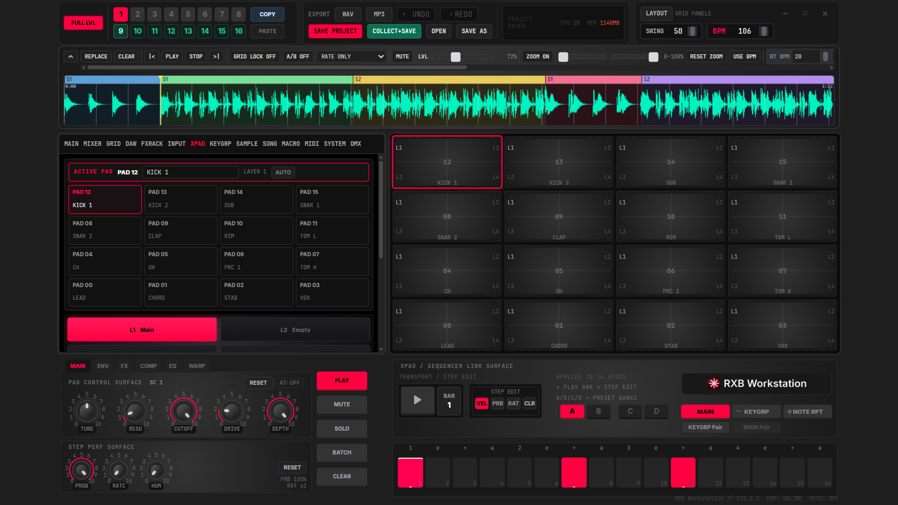
Layer Button Grid#
The 2×2 layer grid mirrors the XY quadrant map from Section 4:
- Layer 1 — top-left
- Layer 2 — top-right
- Layer 3 — bottom-left
- Layer 4 — bottom-right
Click any layer button to select that layer and audition its current sound settings. Double-click a layer button to open the file picker and load a new sample into it. The button shows the layer name when a sample is loaded, or Empty when the slot is free.
XPAD Layer Sound Editor#
The PAD CONTROL SURFACE inside the XPAD tab supports per-layer sound editing and recall.
- Each layer can store its own
MAIN,ENV,COMP, andFXsettings. - If a layer has no independent override, it remains linked to the parent pad settings.
- The top-right status indicator shows
Lx LINKwhen the layer is following the pad andLx OVRwhen that layer has its own saved settings. - Use LINK PAD to remove the layer override and return that layer to the pad-level sound.
XPAD MAIN Tab#
| CONTROL | FUNCTION |
|---|---|
TUNE | Per-layer pitch offset |
RESO | Per-layer resonance amount |
CUTOFF | Per-layer filter cutoff |
DRIVE | Per-layer saturation / drive |
DEPTH | Per-layer aftertouch depth |
AT: OFF / VOL | Per-layer aftertouch target toggle |
XPAD ENV Tab#
| CONTROL | FUNCTION |
|---|---|
ATK | Per-layer attack |
DEC | Per-layer decay |
SUS | Per-layer sustain |
REL | Per-layer release |
XPAD COMP Tab#
| CONTROL | FUNCTION |
|---|---|
AMOUNT | Per-layer insert compressor amount |
RATIO | Per-layer compressor ratio |
ATK | Per-layer compressor attack |
XPAD FX Tab#
| CONTROL | FUNCTION |
|---|---|
REV | Per-layer reverb send |
DEL | Per-layer delay send |
PAN | Per-layer pan position |
TYPE | Per-layer filter type (LP / HP / BP) |
XPAD Preview Behavior#
- Clicking a layer tile previews that exact XY corner/layer.
- The PREVIEW button retriggers the currently selected XPAD layer without leaving the tab.
- Editing a control in the XPAD layer sound editor may retrigger preview so you can hear the updated layer while designing it.
Crosshair Overlay#
A faint grey crosshair marks the 50 % midpoint on each pad button, showing the XY quadrant split. This is a visual guide only — it does not affect pad triggering.
Layer Copy / Paste#
In the XPAD tab (or SAMPLE tab), the COPY button copies the current pad layer (sample + settings) to an internal clipboard. PASTE writes the clipboard content to the currently selected pad and layer. The clipboard is session-only and does not persist across reloads.
18. INPUT Tab — Monitoring Reference#
Starting Input Monitoring#
- Select your audio input device from the device dropdown (
System Defaultor a named interface). - Select the route mode: - Input to Master — feeds the input signal directly to the master output (for monitoring through the mix). - Input to FX Rack to Master — routes the input through the FX Rack before the master (for live FX processing).
- Click START MON. The status indicator changes to
MONITOR: LATCHED.
Monitoring can also be started from the Record Input to Pad card in the XPAD or SAMPLE tabs without switching to the INPUT tab.
See Figure 18.1 for the input routing and monitoring controls.
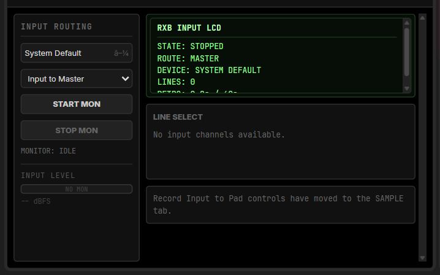
Retrospective Buffer#
While monitoring is active, RXB continuously buffers the incoming audio in a rolling ring buffer (up to 60 seconds). The INPUT LCD shows:
RETRO: 12.4s / 60sThis means 12.4 seconds of audio are currently buffered and available for CAPTURE LAST.
Line Select#
When multiple input channels are detected, the LINE SELECT card shows individual channel strips. Each strip has an enable toggle and a gain slider (0.00 to 2.00). Disabled channels are excluded from capture.
Stopping Monitoring#
Click STOP MON. The buffer is cleared. All monitoring state is separate from project save state.
19. Record Input to Pad — Complete Reference#
The Record Input to Pad card appears on both the XPAD and SAMPLE tabs. Both instances are identical.
Card Header#
The header shows a live monitoring status badge (MON ON / MON OFF) and a START MON / STOP MON quick button. This allows monitoring to be activated without switching to the INPUT tab.
The recording controls are shown in Figure 19.1.
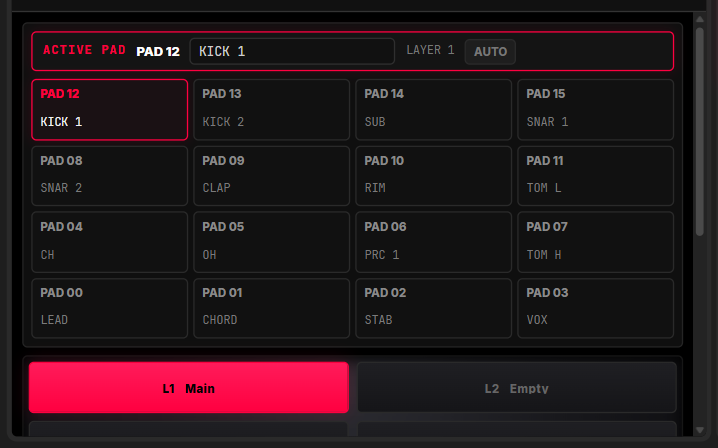
Recording Live Input#
- Select the target pad from the pad dropdown.
- Select the target layer from the layer dropdown (
Layer 1–Layer 4). - Click RECORD INPUT — recording starts immediately from the monitored input.
- Click STOP RECORD to end capture and commit to the selected pad/layer.
The recording indicator (●) shows red when active.
Capture Last (Retrospective Capture)#
Captures the last N seconds of already-buffered input audio without needing to press record in advance.
- Set the capture length (1–60 seconds).
- Click CAPTURE LAST.
Layer fallback: if the target layer already has a sample, RXB automatically finds the next empty layer (scanning forward, then wrapping). A status message confirms: "Layer 1 occupied — placed on Layer 2." The layer selector updates to reflect the actual destination.
Requirement: monitoring must be active and audio must have passed through the input path before clicking CAPTURE LAST.
Resample Mix#
Captures the current master mix output (everything playing together) and commits it as a new sample.
- Set the bar length (1–8 bars).
- Click RESAMPLE MIX.
The capture runs for exactly the specified number of bars at the current BPM, then commits to the selected pad/layer. Internal resample, live input recording, and auto-sampling are mutually exclusive.
Status / Error Messages#
All status and error messages from this card appear inline in red text directly inside the card. Common messages:
| MESSAGE | CAUSE |
|---|---|
| No retrospective audio available yet | Monitoring was not active before clicking CAPTURE LAST |
| Layer N occupied — placed on Layer N | Target layer had a sample; placed on next available layer |
| Auto-sampler range trimmed to N note(s) | Fewer pads available than notes requested |
| Select a MIDI sync output first | AUTO-SAMPLE requires a MIDI output configured in MIDI → SYNC STACK |
20. Auto-Sampler#
The Auto-Sampler automates the process of building a multi-sample keygroup from an external synthesizer or instrument. It sends MIDI notes out through your MIDI sync output, records each note as a sample, assigns each capture to a successive pad, and creates a full keygroup multi-sample map automatically.
Requirements#
- A MIDI sync output must be selected in MIDI → SYNC STACK → MIDI OUTPUT.
- The selected MIDI output must be connected to the instrument you want to sample.
- Input monitoring must be active (or will be started automatically).
- Sufficient empty pads must be available starting from the selected pad.
Workflow#
- Connect your synthesizer/instrument MIDI input to a MIDI interface.
- In MIDI → SYNC STACK, select the MIDI output connected to the instrument.
- In the XPAD or SAMPLE tab, open the Record Input to Pad card.
- Select the start pad and layer where captures should begin.
- Click SHOW SETTINGS to configure the note range and timing.
- Click START AUTO-SAMPLE.
- RXB will automatically: send Note On → wait (Hold) → send Note Off → wait (Tail) → capture → move to next pad.
- When complete, the anchor pad is set to Keygroup mode with a full multi-sample zone map.
Figure 20.1 illustrates the Auto-Sampler configuration fields.
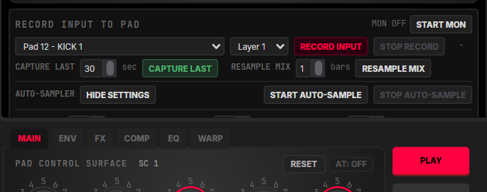
Settings#
| SETTING | DESCRIPTION | DEFAULT |
|---|---|---|
| NOTE START | Lowest MIDI note to sample (0–127, shown with note name) | 36 (C1) |
| NOTE END | Highest MIDI note to sample (0–127, shown with note name) | 72 (C4) |
| STEP | Semitone interval between captures (e.g. 3 = every 3 semitones) | 3 |
| VELOCITY | MIDI velocity sent for each Note On (1–127) | 112 |
| HOLD | How long the note is sustained before Note Off (ms) | 1000 ms |
| TAIL | Silence wait after Note Off before ending capture (captures release tail) | 180 ms |
| MIDI CHANNEL | MIDI channel used to send Note On/Off messages | 1 |
NOTE END can be lower than NOTE START — the sampler will scan downward in that case.
The number of captures is limited by the number of pads available from the start pad. If the note range exceeds available pads, the range is trimmed and a status message confirms how many notes were captured.
Stopping Early#
Click STOP AUTO-SAMPLE at any time. The current note capture completes before stopping. All captures made so far are committed to their pads.
Result#
On completion, the anchor pad (first destination pad) is assigned:
- All captured samples as multi-sample zones with per-zone MIDI root keys.
- Keygroup mode is activated automatically.
- The pad is selected and ready to play chromatically across the captured range.
21. Step Performance Editing#
Step performance controls add per-step expression data to the sequencer grid, separate from the basic on/off pattern.
Access#
Step performance editing is available in the sequencer GRID panel. Select a mode using the VEL, PRB, or RAT buttons in the sequencer transport strip. With a mode active, click or drag directly on any step cell to set per-step values inline on the grid. Per-step probability and ratchet overrides are shown as small indicators inside active step cells (P xx% and xN).
The step-edit controls are shown in Figure 21.1.
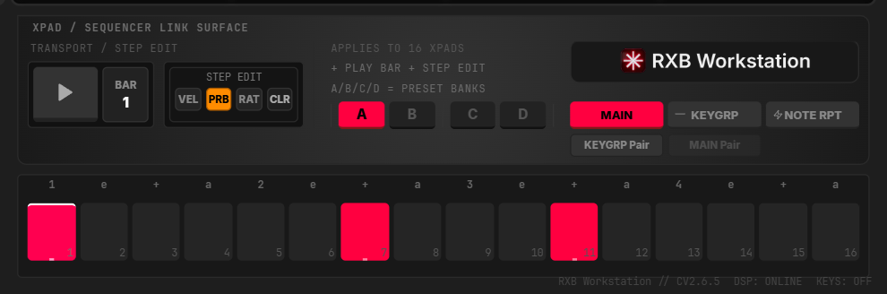
Edit Modes#
Select a mode using the mode buttons in the sequencer transport strip:
| MODE | WHAT IT CONTROLS |
|---|---|
| VEL | Per-step velocity and pan. Drag vertically to adjust velocity, horizontally to adjust pan (–1 to +1). Click to toggle the step on/off |
| PRB | Per-step probability (0–100 %). Click to cycle through preset values; Shift+click to clear the override. Steps with PRB < 100 % may not trigger on every pass |
| RAT | Per-step ratchet (1–8). Sets how many times the step fires within its grid slot. Click to cycle through values; Shift+click to clear the override |
Right-click any step cell to clear its PRB and RAT overrides in one action.
Editing Values#
Click and drag on a step cell to set its value. The CLR button in the sequencer transport strip resets all PRB and RAT overrides for the current pad on the active bar.
Step Perf Surface (Global Pad Defaults)#
The STEP PERF SURFACE panel shows per-pad global defaults that apply whenever a step has no per-step override set:
| KNOB | WHAT IT SETS |
|---|---|
| PROB | Default trigger probability (0–100 %) for all steps on this pad |
| RATC | Default ratchet count (1–8) for all steps on this pad |
| HUM | Humanize — random timing offset per step (0–40 ms) |
MIDI Learn Targets#
Step performance targets can be assigned to MIDI controller knobs via MIDI → MIDI LEARN (USER LAYER):
STEP PERF SURFACE KNOBS: Prob, Ratchet, Humanize (global pad defaults)STEP EDIT MODE: VEL, RPB, RAT (selects the active edit mode)
22. Arpeggiator (Keygroup Mode)#
When KEYGRP mode is active and transport is playing, RXB includes a basic arpeggiator that triggers when multiple keyboard keys are held.
Enabling#
The ARP toggle appears in the MAIN tab view when keygroup mode is active. Enable it to activate arpeggiator behaviour.
See Figure 22.1 for the ARP control.
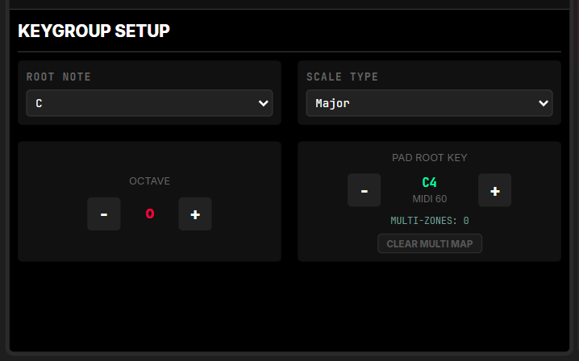
How It Works#
- Hold two or more keys on the computer keyboard (pad trigger keys).
- While playing, RXB cycles through the held notes in sequence, one per step.
- The arpeggiator speed is tied to the sequencer BPM — one note per step at current tempo.
- Release all keys to stop the arpeggio.
Notes#
- The arpeggiator uses the scale/root/octave settings from the KEYGRP tab.
- Velocity follows the pad's current velocity setting.
- The arpeggiator is deactivated when keygroup mode is turned off. Held keys are cleared automatically.
23. FX Rack Reference#
Plugin Browser#
The PLUGIN BROWSER sidebar (left side of the FXRACK tab) lists all available effect modules. Click a module name to load it into the active effect slot. A loaded module shows an INSERTED badge. Click again to unload.
The five built-in send modules:
| MODULE | SHORT NAME | CHARACTER |
|---|---|---|
| Granular Bloom | GRN | Granular texture, diffusion, bloom movement |
| Nebula Verb | VRB | Hybrid reverb — room, hall, plate textures |
| Vector Echo | ECH | Stereo delay with modulation and routing variants |
| Bedroom Air | AIR | Vocal doubler and air enhancement chain |
| Psychedelic Vox | PSY | Slap / echo / swirl vocal space chain |
The FX Rack is shown in Figure 23.1.
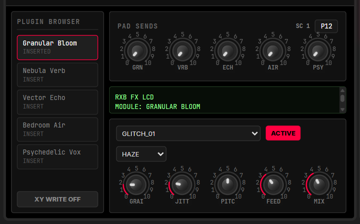
Pad Sends#
The PAD SENDS card shows five send knobs for the currently selected pad (shown as Pxx in the card header). Each knob sets how much of that pad's output is sent to the corresponding FX module.
- Turning a send knob to zero removes that pad from the effect entirely.
- Send values are saved per pad and persist with the project.
Effect Parameters#
Selecting a module in the browser opens its parameter controls in the main area. Parameters vary by module — use the LCD readout to monitor live values. Each module also has a preset selector dropdown and a bypass toggle.
XY WRITE Mode#
The XY WRITE toggle maps the XY pad position to effect parameter modulation. When active, moving the XY pad on the selected XPAD pad writes modulation values to the loaded effect in real time.
24. Keyboard Shortcuts — Complete Reference#
| SHORTCUT | ACTION |
|---|---|
L | Enter Layout Mode |
Enter (in Layout Mode) | Lock and save current layout |
Escape (in Layout Mode) | Cancel layout changes |
Ctrl + Z / Cmd + Z | Undo |
Ctrl + Y / Cmd + Y | Redo |
Ctrl + Shift + Z / Cmd + Shift + Z | Redo (alternate) |
Shift + X | Clear backing track |
1 2 3 4 | Trigger pads 1–4 |
Q W E R | Trigger pads 5–8 |
A S D F | Trigger pads 9–12 |
Z X C V | Trigger pads 13–16 |
Keyboard pad triggering is suppressed while a text input field is focused.
Undo/Redo history depth supports up to 40 states. Redo is available via Ctrl+Y or Ctrl+Shift+Z.
25. Macros#
The Macro system provides four assignable control slots, each driving any number of pad parameters, per-pad FX sends, or FX module parameters. Macro mapping (what a macro controls) lives in the dedicated MACRO tab. Optional MIDI-CC control (what external controller knob drives the macro) is configured separately in the MIDI tab.
Overview#
Four macro slots (MACRO 1 – MACRO 4) are always available. Each macro:
- Has a live value slider (
0.00–1.00) on the MACRO tab that moves all linked targets at once. - Can be renamed (click the macro name field).
- Holds any number of targets, each with its own AMOUNT (–1 … +1) that scales and can invert the macro's influence.
- Can optionally be driven by a MIDI CC set per controller profile (see §11 Performance MIDI Controller Library).
MACRO Tab Layout#
The MACRO tab is split into two columns:
| PANEL | CONTENT |
|---|---|
| MACRO CONTROLS (left) | Four stacked slots. Each row: name input, EDIT (selects this slot's targets on the right), LEARN (arms target capture), macro value slider, and Targets: N count. The currently selected slot has a red border. |
| {MACRO} TARGETS (right) | Target list for the selected macro, plus CLEAR TARGETS. Each row shows the target label, an AMOUNT slider (-1.00 … +1.00), and an X remove button. Empty state reads "NO TARGETS LEARNED". |
Figure 25.1 illustrates the two-column macro layout.
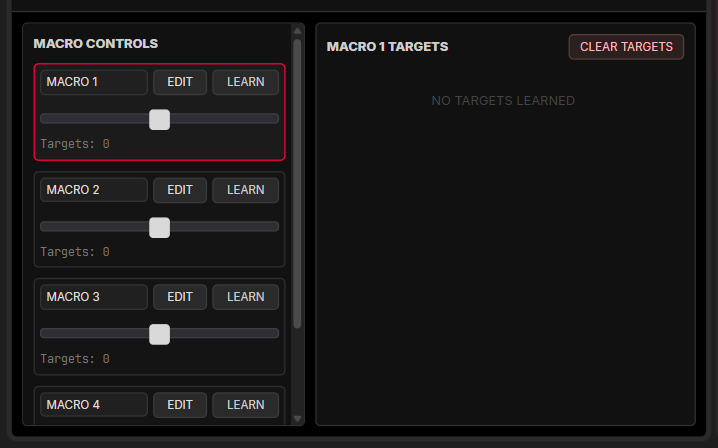
Assigning Targets (Learning)#
- Open the MACRO tab.
- In MACRO CONTROLS, click LEARN on the macro slot you want to map. LEARN lights red and the slot is armed.
- Move any eligible control in another tab — a pad knob, a per-pad FX send, or an FX module parameter. The captured control is added as a target on that macro.
- Click LEARN again to disarm.
Learning the same control a second time updates (rather than duplicates) the target. Switch the visible target list by clicking EDIT on a different slot.
Adjusting and Removing Targets#
- AMOUNT (
-1.00…+1.00) — scales the macro's influence on that target. Negative values invert the direction (e.g. macro up → parameter down). - X — removes a single target.
- CLEAR TARGETS — removes all targets for the currently selected macro.
Supported Target Types#
| TYPE | EXAMPLE LABEL | SOURCE |
|---|---|---|
| Pad parameter | PAD 13 :: filter, PAD 13 :: drive, PAD 13 :: atDepth | Any pad knob on MAIN / ENV / FX / COMP surfaces |
| Per-pad FX send | PAD 13 :: SEND vrb | Pad send knob in the FXRACK PAD SENDS card |
| FX module parameter | FX grn :: {param} | Any parameter on a loaded FX Rack module |
Transport, tempo, swing, and step-perf globals are not macro targets in the current build — those are assigned via MIDI Learn (see §11), not via the MACRO tab.
MIDI CC Control (Optional)#
A macro slot can be driven by an external controller CC:
- Go to MIDI → PERFORMANCE MIDI CONTROLLER → MACRO CC and set the CC number for each macro slot. Defaults vary by controller profile (Launchkey:
21–24, Push:14–17, Move:71–74). - Incoming CC values on the matching channel scale the macro value in real time, driving every target as if the on-screen slider were moved.
The macro CC fields are shown in Figure 25.2.
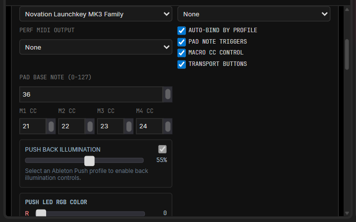
26. Warp / Time-Stretch Reference#
Location#
SAMPLE tab → STRETCH card (bottom-right of the edit surface)
Controls#
| CONTROL | DESCRIPTION |
|---|---|
| MODE | Repitch — time and pitch change together (classic sampler behaviour). B-PRSV (Beat Preserve) — time changes while pitch is maintained |
| RATIO | Stretch factor from 0.25× to 4.00×. 1.00 = no change. Default is 1.00 |
| APPLY STRETCH | Commits the stretch to the sample buffer (destructive — use Undo to reverse) |
See Figure 26.1 for the stretch controls.
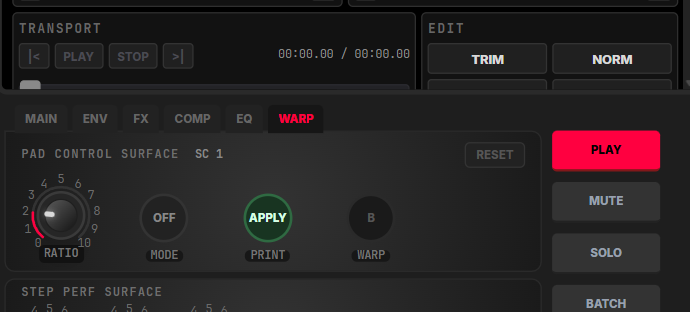
Choosing a Mode#
- Repitch is the most transparent for percussive sounds and natural samples. Slower playback lowers pitch; faster raises it. Use for vinyl-style effects or tempo matching that tolerates pitch shift.
- Beat Preserve maintains the original pitch while changing duration. Best for melodic loops and sustained pads that need to match a new tempo.
Stretch Workflow#
- Load a sample into the SAMPLE view.
- Set RATIO to the desired stretch factor (e.g.
0.75for 75% of original length). - Preview playback to evaluate the result.
- Click APPLY STRETCH to commit. The waveform updates immediately.
- Use Ctrl+Z to undo if the result is not acceptable.
27. Song Mode and Arranger — Extended Reference#
Song Mode Playlist#
Song Mode plays back a playlist of steps in sequence. Each step defines:
| FIELD | DESCRIPTION |
|---|---|
| SCENE | Which scene pattern plays (1–8) |
| BARS | How many bars the section plays before advancing. A ½ marker appears beside the label on odd lengths |
| ½ BAR | Which bar of the pattern the trailing odd bar plays — 1ST or LAST. Greyed out on even-length sections |
| BPM | AUTO uses the global BPM; enter a value to override per step |
| BANK | AUTO keeps the current bank; A/B/C/D forces a bank switch |
| SOURCE | MAIN and/or KEYGRP toggles — controls which voices are active for this step |
The panel header shows a running total, e.g. 4 sections · 15 bars.
Exporting the Whole Arrangement#
Location: SONG view → header → EXPORT ARRANGEMENT WAV / MP3
This is the "give me my song as a file" button. Press it and RXB rewinds to the top of the arrangement, plays the whole thing, stops itself at the end, and saves the result. You do not have to sit there starting and stopping a recorder.
| WHERE IT GOES | WHEN |
|---|---|
Bounces/ inside your project folder, named arrangement-<timestamp>.wav | When the project is a linked folder |
| Your downloads folder | Otherwise |
Both buttons are greyed out until SONG MODE is ACTIVE and the playlist has at least one section — hover to see which of the two is missing.
While it runs, the header shows elapsed time, total time, and which section is playing. CANCEL stops it immediately and saves nothing.
Leave the app in the foreground and avoid switching projects or editing the arrangement while it runs.
The export controls are shown in Figure 27.1.
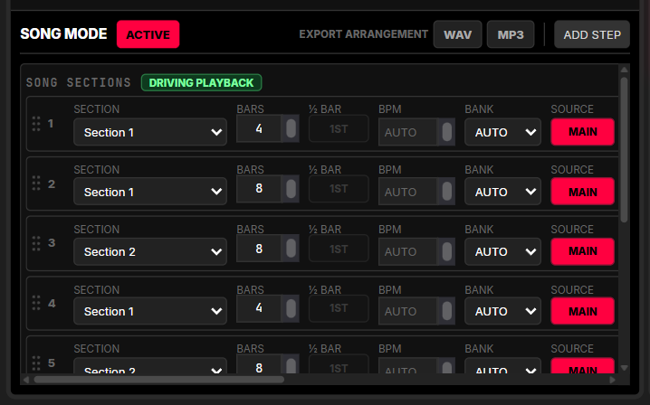
Odd-Length Sections, Turnarounds and Pickups#
A sequencer pattern is 32 steps — 8 beats, or two bars of 4/4. Sections built from whole pattern loops can therefore only ever be an even number of bars. Setting BARS to an odd number ends the section halfway through a loop, which is what lets you write a 7-bar verse or a single-bar lead-in.
When a section runs an odd number of bars, the ½ BAR toggle decides what that final bar plays:
| SETTING | WHAT YOU HEAR |
|---|---|
1ST | The trailing bar repeats the bar the section opened on — the section is simply cut short |
LAST | The trailing bar plays the pattern's second bar instead — its fill or turnaround |
Building a turnaround: set a section to an odd length (say 7 bars) and switch ½ BAR to LAST. Bars 1–6 play the pattern normally and the seventh plays the pattern's second bar, so the section ends on its fill rather than restarting.
Building a pickup: add a section of 1 bar with ½ BAR set to LAST, and place it immediately before the section it leads into. The single bar plays that pattern's second bar as a lead-in.
Even-length sections behave exactly as before — the toggle is greyed out because it has nothing to decide.
Figure 27.2 illustrates a built-out song playlist.
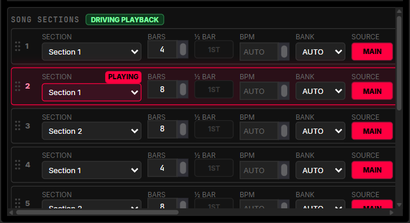
Clip Launcher Workflow#
The Clip Launcher stores up to 8 clip slots. Each slot can hold a scene capture and carry its own MAIN/KEYGRP source state.
| BUTTON | ACTION |
|---|---|
CAP | Captures the current scene pattern into this clip slot |
GO | Queues this clip for launch — plays at the next bar boundary (quantised) |
The clip launcher is shown in Figure 27.3.
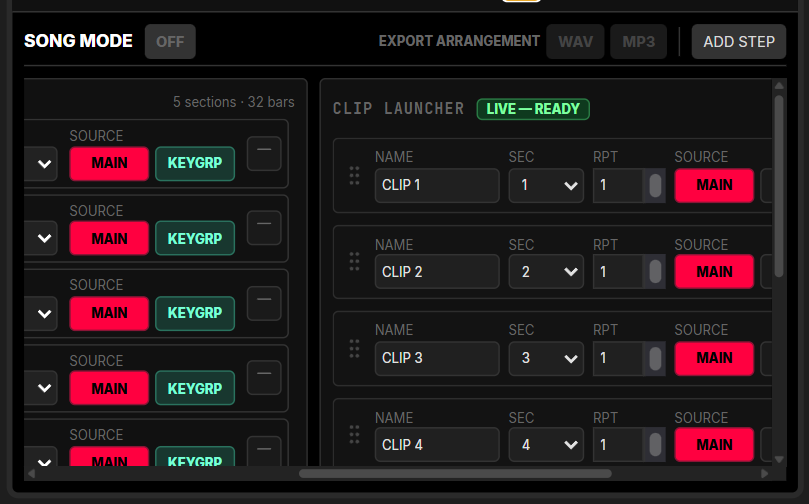
Mixer and Backing Track Visual Reference#
Mixer Fader Grip and Meter Standard#
The MIXER gain slider uses a small hollow triangle grip positioned to the left of the level meter so your finger does not cover the meter markings while dragging.
- Mixer meter track width standard:
6 px - Mixer slider grip: shared hollow triangle style
- Mixer visuals use shared token-based color and sizing standards
XPAD / KEYGRP Follow Behavior#
When working in KEYGRP mode, the XPAD view follows the currently selected active pad. The layer labels, sound editor, and preview target move with the active keygroup pad selection.
Backing Track Transport Layout#
The backing-track header is split into two rows for readability:
- Top row: core backing-track transport and lock controls
- Second row:
LVL,ZOOM,BT BPM, and status/readout controls
Backing Track Scrollbar Standard#
Where horizontal overflow is required, RXB uses a shared dark 14 px scrollbar style including arrow-style ends.
LVL / ZOOM Controls#
The LVL and ZOOM section uses the standard tokenized workstation control shell.
Numeric Scrub Controls — Horizontal Popout#
All numeric scrub controls (BPM, SWING, BT BPM, STRETCH RATIO) use a compact horizontal popout panel that slides out to the side of the scrub button when activated.
- Click the scrub button (small pill icon) next to any numeric field — the horizontal popout appears immediately.
- Drag left/right across the track bar to sweep the value across the full range.
- Click the ◄ arrow to step the value down by one increment.
- Click the ► arrow to step the value up by one increment.
- Click outside the popout or press Escape to dismiss.
- Accent-red fill bar shows position across the range at a glance.
- Glowing red handle marks the current value precisely.
- Live value readout sits inline to the right of the track.
STRETCH RATIO note: the STRETCH RATIO scrub in the SAMPLE tab opens to the left (the popup is at the right edge of the panel). All other controls open to the right.
See Figure 27.4 for the BPM scrub control.
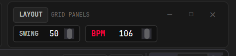
Per-Pad Insert Compressor (COMP Tab)#
A per-pad insert compressor is available on the PAD CONTROL SURFACE and the XPAD per-layer sound editor.
COMP Tab Controls#
| CONTROL | FUNCTION |
|---|---|
AMOUNT | Compressor depth (0.00 = bypass, 1.00 = full compression) |
RATIO | Compression ratio (1.0:1 – 6.0:1) |
ATK | Compressor attack time (1–30 ms) |
Setting AMOUNT to 0.00 bypasses the compressor entirely — no compressor node is created and there is zero CPU overhead on that pad path.
Signal-chain position: after the drive/saturation stage and filter, before pad volume and routing. This makes the compressor an insert on the pad voice rather than a send effect.
Settings are saved per pad and persist with the project. Project files without compressor data load with AMOUNT: 0.00 (bypass) automatically.
The PAD CONTROL SURFACE has five tabs: MAIN, ENV, COMP, FX, and WARP.
The compressor controls are shown in Figure 27.5.
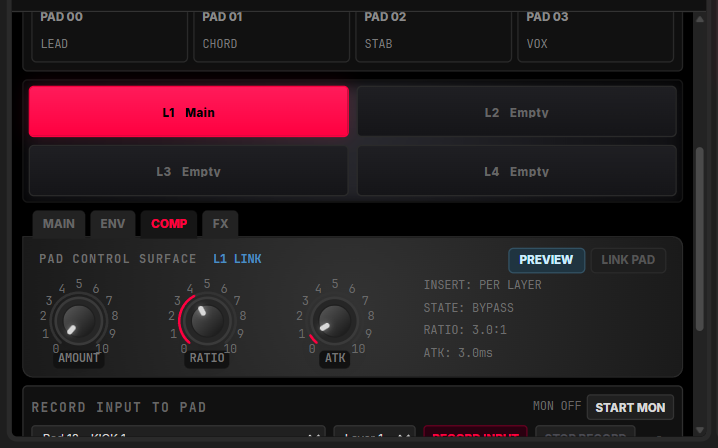
Per-Pad Scene Profiles#
Each pad carries 16 independent sound profiles — one per scene slot. Scenes 1–8 and 9–16 each form a bank with an anchor scene (scene 1 and scene 9 respectively).
Each profile stores the complete sound state for that pad in that scene:
| SECTION | PARAMETERS |
|---|---|
| MAIN | Pitch, resonance, filter cutoff, drive, aftertouch depth, aftertouch target |
| ENV | Attack, decay, sustain, release |
| COMP | Compressor amount, ratio, attack |
| FX | Reverb, delay, pan, filter type |
| FXRACK | Per-module send levels (GRN, VRB, ECH, AIR, PSY) |
Step performance parameters (probability, ratchet, humanize) are not part of scene profiles — they remain global per-pad.
Anchor Scenes and Sync#
- Anchor scenes (scene 1 and scene 9) always read directly from their own stored profile (or fall back to pad-level defaults if no profile exists).
- Non-anchor scenes (2–8 and 10–16) default to synced — a synced scene follows the anchor's current values in real time rather than storing its own.
- Syncing is a live link: if you change a parameter on the anchor scene, all synced scenes immediately reflect that change.
Scene Profile UI#
| ELEMENT | DESCRIPTION |
|---|---|
SC {n} badge | Shows the current scene number in the PAD CONTROL SURFACE header; highlighted blue when the current scene is synced |
SYNC TO SCENE 1 / SYNC TO SCENE 9 | Toggle button (non-anchor scenes only); lit blue when synced. Label reflects the active bank (MAIN or KEYGRP) |
| Dimmed content area | When a scene is synced, the parameter controls are shown at reduced opacity — values are read-only, reflecting the anchor |
| RESET buttons | Available on every tab (MAIN, ENV, FX, COMP, WARP) to reset that tab's values to defaults |
Figure 27.6 illustrates the synced, read-only state.
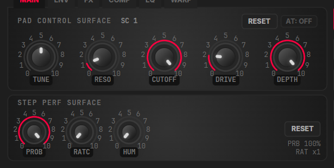
Creating and Removing Scene-Specific Sounds#
- To give a scene its own independent sound: click the
SYNC TO SCENE 1/SYNC TO SCENE 9button on a synced scene. RXB captures the anchor's current values as a starting point and stores them as an independent profile for that scene. - To re-sync a scene back to the anchor: click the button again — the profile slot resets to null and the scene follows the anchor live.
- Editing any MAIN/ENV/FX/COMP/FXRACK parameter on an anchor scene stores the changes in that anchor's profile slot. Non-anchor synced scenes immediately reflect the change.
Playback Behavior#
- Live pad hits, sequencer playback, and the arpeggiator all resolve scene profiles consistently — the same sound is used whether a pad is triggered manually or by a sequencer step.
- Switching the active scene during playback immediately pushes resolved compressor parameters to the audio engine for all pads — no retrigger required.
Scene Copy/Paste with Sound State#
Scene copy/paste (GRID → scene context menu) captures and transfers the full per-scene sound state alongside the pattern data.
When you paste a scene, the destination scene receives both:
- The step pattern from the source scene
- The per-pad scene-profile sound settings from the source scene (tune, filter, envelope, compressor, FX sends)
This ensures pasted scenes sound identical to their source rather than playing with the destination scene's existing pad sounds.
Visual Performance Enhancements#
XY Layer Flash on Step Trigger#
During sequencer playback, the corner layer tags on each XPAD pad button briefly brighten when a step fires for that pad. Layers with a bilinear XY weight of 0.01 or higher will flash.
This gives immediate visual feedback about which layer(s) are contributing to each triggered step based on the current XY position:
- Top-left (
L1) flashes when the XY position is in the top-left quadrant. - Top-right (
L2) flashes when in the top-right quadrant. - Bottom-left (
L3) and bottom-right (L4) similarly. - When XY is centered, all four layers flash proportionally.
The effect uses the existing corner tag display — no separate overlay is added.
Waveform Cursor Step Tracking#
When the SAMPLE view is open and the currently selected pad fires a step during sequencer playback, the waveform cursor animates forward in real time, tracking the playback position through the sample.
No new audio node is created for the visual update — a RAF-based clock drives the cursor independently of the audio engine, synchronized via the step trigger.
28. DMX Lighting (Art-Net Output)#
The DMX tab (rightmost in the tab bar) turns RXB into a lighting controller. It transmits a full DMX512 universe over Art-Net (UDP), so you can drive fixtures, dimmers, and LED rigs in sync with your performance. Art-Net output uses the desktop runtime's network layer — it is a Windows/desktop feature and is not available in browser-only contexts.
The full DMX surface is shown in Figure 28.1.
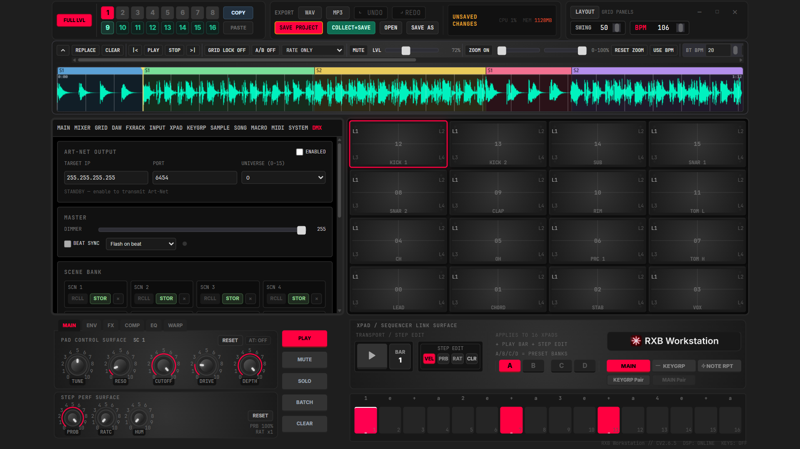
Art-Net Output Configuration#
The ART-NET OUTPUT card configures the network destination:
| CONTROL | FUNCTION | DEFAULT |
|---|---|---|
ENABLED | Master transmit switch. When off, no Art-Net packets are sent (STANDBY) | Off |
TARGET IP | Destination address. Use a fixture/node IP for unicast, or a broadcast address to reach all nodes | 255.255.255.255 (broadcast) |
PORT | UDP port (1–65535) | 6454 (standard Art-Net) |
UNIVERSE (0–15) | DMX universe selector | 0 |
The status line beneath confirms the live state — for example LIVE · 12 ch active · U0 → 255.255.255.255:6454 when enabled, or STANDBY — enable to transmit Art-Net when off. Any send error from the network layer is appended to this line.
Frames are sent automatically whenever channel values, the master dimmer, or the enabled state change, and are throttled to roughly 44 frames per second to keep the network output smooth.
Master Controls#
| CONTROL | FUNCTION |
|---|---|
DIMMER | Master intensity (0–255). Every channel value is scaled by dimmer ÷ 255 before transmission, so this acts as a grand master fader across the whole universe |
BEAT SYNC | Enables tempo-locked automation (requires transport playing and output enabled) |
| Beat sync mode | Flash on beat or Scene advance on beat (see below) |
| Beat indicator | The small dot flashes red on each synced beat |
Beat Sync Modes#
Beat sync runs only while the transport is playing, output is ENABLED, and BPM is above zero. The beat interval follows the project tempo (60 ÷ BPM seconds).
- Flash on beat — momentarily forces the master dimmer to full (
255) for a short pulse on each beat, then returns to the set level. Use for strobe/accent effects locked to tempo. - Scene advance on beat — steps through the Scene Bank (
SCN 1 → 8, wrapping) one scene per beat, recalling each scene's channel snapshot in turn. Use for automated, tempo-synced lighting changes.
Scene Bank#
The SCENE BANK stores up to eight lighting snapshots (SCN 1–SCN 8). Each slot has three actions:
| BUTTON | ACTION |
|---|---|
STOR | Stores the current 512 channel values into that scene slot |
RCLL / LIVE | Recalls the stored snapshot to the live channels. The active scene's button reads LIVE and the slot is outlined in red |
× | Clears the stored snapshot |
Populated slots show their active-channel count. In Scene advance on beat mode, the bank is cycled automatically.
Channel Grid (DMX 1–512)#
The CHANNELS — DMX 1–512 card shows the full universe as a 16-column grid of cells. Each cell displays its channel number and current value (0–255); brightness and red tint track the value.
- Click a cell to open the inline channel editor — a
0–255slider plus a numeric field for exact entry. Click the cell again or the×to close the editor. - BLACKOUT instantly zeroes all 512 channels (live output, not the stored scenes).
The footer summarises the universe: {n}/512 active · master ×{ratio} · click cell to edit.
Documentation Disclaimer Notice#
Product behavior disclaimer#
RXB Workstation behavior may vary by runtime, OS audio stack, connected hardware, and project complexity. Validate critical workflows in your target deployment environment.
Audio/legal disclaimer#
Users are responsible for ensuring they have legal rights to load, process, save, and distribute any audio/media used with RXB Workstation.
Third-party trademark disclaimer#
All third-party product names and trademarks are property of their respective owners and are used for identification/reference purposes only.
Performance disclaimer#
Performance targets, latency characteristics, and compatibility notes are informational and not guarantees for every system configuration.
Thank you for using RXB Workstation. For updates, support articles, and issue reporting, use the RXB Support Portal.
--- End of RXB Workstation User Manual CV2.6.5 ---